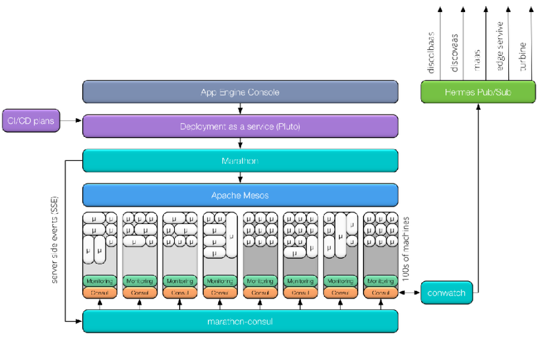
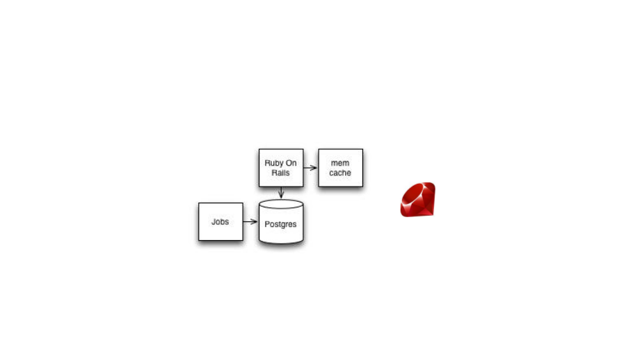
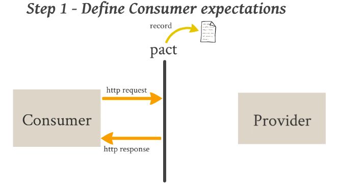
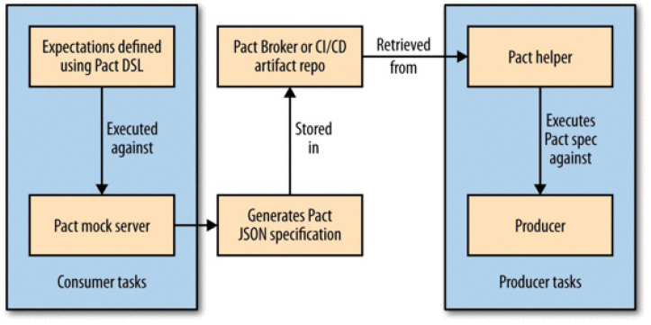
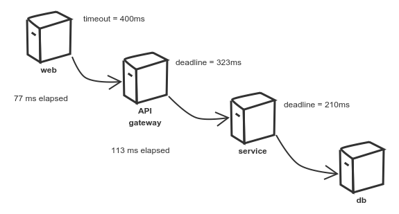
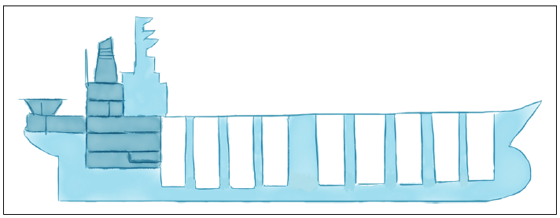
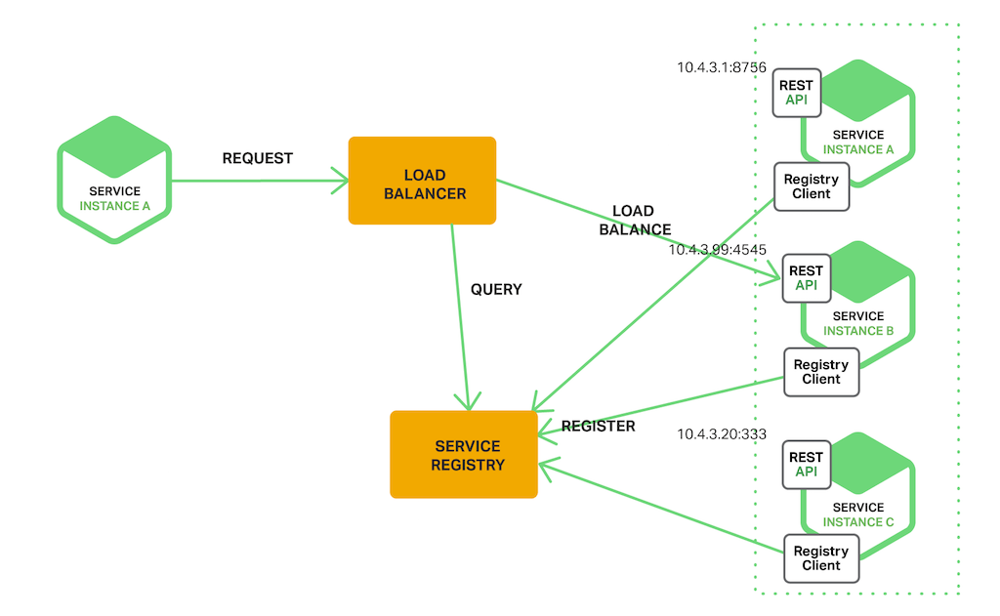

Dlaczego każdy projekt green field staje się legacy, i jest to tylko i wyłącznie funkcja czasu?
Mikrousługi i wzorce architektury rozproszonej
Poznajmy się
O mnie
Jakub Marchwicki
programista od ponad 15 lat
po drodze: manager, dyrektor IT, architekt, konsultant
domeny: ubezpieczenia, bankowość, marketing, edukacja, rolnictwo
Twitter: @kubem
Microservices
| Co to? Po co to? Możliwości i zagrożenia. |
Monolithic vs Micro
Monolithic vs Micro
Monolithic vs Micro
Monolithic vs Micro
Ale…
Mikroserwisy to nie jedyne podejście do architektury aplikacji
Mikroserwisy to podejście specyficzne, adresujące bardzo konkretne potrzeby:
Potrzeba skalowania technicznego (throughput, latency)
Potrzeba skalowania funkcjonalnego (dodawanie nowych elementów do systemu)
Potrzeba skalowania ludzi (niezależność zespołów)
Mikroserwisy to podejście trudne
Wymagające zmian na poziomie technicznym (narzędzia, technologie) jak i ludzkim (organizacja, procesy, umiejętności)
Czym jest mikroserwis?
Micro Service is an architectural concept that aims to decouple a solution by decomposing functionality into discrete services with communication over lightweight mechanisms, often an HTTP API
— Thoughworks
A microservice is a tightly scoped, strongly encapsulated, loosely coupled, independently deployable and independently scalable application component
— Gartner
Czym jest mikroserwis? (2)
Niewielki problem biznesowy (single responsibility principle)
Niezależny, wdrażany niezależnie
Wdrażany w sposób automatyczny
Działa we własnym procesie
Jest właścicielem swoich danych
Integruje się explicite z użyciem powszechnych interfejsów (nie jest np. statycznie linkowany, wywoływany w pamięci)
Czym nie jest mikroserwis?
Mały serwis (niewiele linijek kodu) komunikujący się z główną aplikacją z wykorzystaniem REST (w pełni od nie zależny)
Uproszone API (np. REST) dla istniejącego serwisu, dodane do monolitycznej aplikacji
Kilka aplikacji, na pojedynczym serwerze, korzystających ze współdzielonych zasobów (bazy danych, systemu plików)
Serwis zależny od innych usług w ekosystemie, w sposób uniemożliwiający niezależne aktualizacje
Aplikacja zapakowana w kontener Dockera
Usługa obsługiwana ręcznie, bez automatyzacji testów, wdrożenia i utrzymania
Co łączy udane wdrożenia mikroserwisów
Ewolucja od architektury monolitycznej (PHP, Ruby, PostreSQL) w kierunku mikrousług
Zespoły zaznajomione z domeną (e-commerce), świadome ograniczeń i wyzwań (spikes)
Jasno określone kryteria docelowe (identyfikacja aktualnych problemów)
Skala rozwiązania
Możliwość rozwiązywania trudnych problemów (aplikacja, infrastruktura, domena)
Własne rozwiązania zarządzania infrastrukturą
Organizacje otwarte na zmiany (zwinność organizacji) i opensource (korzystają i oddają)
Monolityczne aplikacje vs microservices
- Problemy z monolitem
Trudne w rozwoju i utrzymaniu (long term technology stack commitment)
Nawet jeżeli podzielone na warstwy - wciąż występują wewnętrzne, niewidoczne sprzęgnięcia
Nowe sprzęgnięcia pojawiają się bardzo łatwo, w sposób niekontrolowany
Pojedynczy proces (w systemie) umożliwia odwołania poza "kontraktem"
Monolityczne aplikacje vs microservices (2)
- Problemy z monolitem
Trudne w testowaniu i wdrażaniu (zależności, atomic releases and rollbacks)
Trudny w skalowaniu (trzeba skalować całość podczas gdy od jednej usługi oczekiwana jest lepsza wydajność)
FUD: jeżeli działa - nie dotykać, nie naprawiać
Ładne diagramy rzadko kiedy przekładają się na ładny kod
Monolityczne aplikacje vs microservices (3)
- Zalety monolitu
statyczna architektura - brak większych (rewolucyjnych) zmian
kilka repozytoriów i zależności do zainstalowania,
prosty sposób postawienia całego środowiska,
prosta integracja zmian do wdrożenia,
prosty do utrzymania na produkcji,
proste śledzenie interakcji w kodzie.
Monolityczne aplikacje vs microservices (4)
- Problemy z mikro usługami
Równie trudno (jak w monolicie) ogarnąć całość rozwiązania
Ale całość nie jest konieczna to rozwijania tylko części aplikacji
Nowy model działalności (np. DevOps)
Nowy sposób lokalizowania problemów
Diagnoza gdzie problem wystąpił
W następnej kolejności analiza dlaczego i jak naprawiać
Potencjalne problemy wydajnościowe (latency)
Monolityczne aplikacje vs microservices (5)
Silna enkapsulacja modułów, moduły relatywnie proste | Trudne do opanowania rozproszenie systemu, dużo autonomicznych jednostek |
Niezależne wdrożenia i testy | Brak silnych więzów spójności / integralności (eventual consistency) |
Niezależne charakterystyki skalowania i wydajności | Network latencies |
Różnorodność technologiczna (dostosowanie narzędzi do problemu) | Wyzwania organizacyjne i utrzymaniowe (skomplikowane narzędzi i zarządzania zależnościami) |
Monolityczne aplikacje vs microservices (6)
Czy architektura mikro usług to powinno być goto architecture?
Monolith First (https://martinfowler.com/bliki/MonolithFirst.html - 06.2015)
Don’t start with a monolith (https://martinfowler.com/articles/dont-start-monolith.html - 06.2015)
Czy architektura monolityczna jest zła?
If you can’t build a monolith, what makes you think microservices are the answer? (http://www.codingthearchitecture.com/2014/07/06/distributed_big_balls_of_mud.html - 06.2014)
any decent answer to an interesting question begins, "it depends…"
— Kent Beck
Dlaczego monolity nie działają?
Dlaczego monolity nie działają? (2)
Cargo-cult architecture (standardy organizacyjne)
Zależności pomiędzy softwarem a ludźmi (Bob The Builder)
Klątwa systemów legacy
Problemy techniczne (trudności w utrzymaniu - technology eof)
Problemy organizacyjne (trudności z rekrutacją - code camps)
Problemy biznesowe (all features weren’t made equal, atomic 6moths release cycle)
Dlaczego mikrousługi nie działają?
Nie ma możliwości "mechanicznego podziału" złożonego systemu na mniejsze części - m.in. z powodu "zależności biznesowych". Brak znajomości reguł domeny prowadzi często do "rozproszonego monolitu".
Decydując się na mikro usługi nie zdajemy sobie sprawy z kosztów, których nie widać w rozwiązaniach monolitycznych: zależności, wdrożenie, utrzymanie.
Microservices - przykładowe wdrożenia
| Przykładowe wdrożenia architektury mikrousług |
Mikroserwisy - przykładowe wdrożenia
Wdrożenia architektury mikrousług na przykładzie
Allegro (https://allegro.tech/)
Zalando (https://zalando.github.io/)
Gilt (http://tech.gilt.com/)
| Disclaimer Nie jestem związany z ww. firmami. Wiedza o wdrożeniach i platformach mikrousługowych jest wiedzą ogólnodostępną. |
Allegro (1)
Platforma aukcji internetowych w Polsce
Monolityczna aplikacja Qeppo (PHP + Oracle) - od samego początku Allegro (1999)
12MLoC w 2012 (masa krytyczna)
Allegro (2)
Decyzja w 2013 nie była pójściem w kierunku mikro usług a SOA
Allegro (3)
Dlaczego SOA?
potrzeba szybszego developmentu dla 50+ zwinnych zespołów,
potrzeba niezależnego skalowania poszczególnych części platformy,
potrzeba większej odporności platformy na awarie,
potrzeba przejścia na nowocześniejsze technologie (JVM),
potrzeba zoptymalizowania kosztów utrzymania i rozwoju,
architektura na kolejne kilka(naście) lat rozwoju Allegro.
Allegro (4)
- 2013
System bootstrapowania usług
Zalążek docelowej architektury (Service Discovery, Logger)
- 2014
Pierwsze usługi działają produkcyjnie
- 2015
Nowa przechodzi audyt
Data driven development (korzystanie z danych - Data Science)
Powstają nowe produkty w oparciu o nową architekturę
Nowe rozwiązania (Mesos, Consul, Zipkin)
Allegro (5)
- 2016 - Allegro App Engine
repozytorium git z kodem z zainicjalizowanego szablonu,
plany CI/CD (testowanie, wersjonowanie i wdrażanie usługi),
dashboardy z logami aplikacyjnymi (Kibana)
dashboardy z metrykami technicznymi i biznesowymi (Graphite + Grafana),
“czujki” w systemach monitorujących,
polityki dyżurowania i eskalacji w PagerDuty,
profil usługi w katalogu usług,
wdrożenie na środowisko developerskie.
Allegro (6)
- Implementacja
jak inne usługi mnie mogą skonsumować?
jak ja mogę skonsumować inne usługi?
jak mogę wystawić swoje API na zewnątrz?
jak mogę siebie zabezpieczyć przed innymi usługami?
jak mnie później debuggować?
jak być spójnym z całą resztą architektury?
Allegro (7)
- Orchiestracja usług
Hermes (rozproszony pub/sub) w Allegro (oparte o Apache Kafka),
każda usługa może opublikować zdarzenie,
każda usługa może skonsumować dowolne inne zdarzenie,
każde zdarzenie ma swój wersjonowany schemat,
wszystkie zdarzenia dostępne są do analityki offline.
Allegro (8)

Allegro (9)
prod: 3500 CPU, 6.5 TB pamięci, 1500 kontenerów,
test: 512 CPU, 1 TB pamięci RAM, 500 kontenerów,
dev: 1200 CPU, 2 TB pamięci RAM, 2200 kontenerów,
wdrożenia produkcyjne na miesiąc:
1341 (prod),
2899 (test),
2775 (dev)
ca. 50 wdrożeń na godzinę
Allegro (10)
- Monitoring mikrousług
health checks (Marathon, Consul),
statystyki kontenerów,
metryki aplikacji (Graphite) + czujki na nich (Alamo),
trace’y (Zipkin),
logi aplikacji + czujki na nich (Sentry),
monitoring frontendu (Appdex),
automatyzacja obsługi incydentów (Pagerduty).
Allegro (11)
- Aktualne wyzwania (as of 2017)
450+ mikrousług w katalogu usług i konsoli AppEngine,
7 tys. repozytoriów z kodem,
11 tys. planów CI/CD,
ca. 9.7 mln metryk na minutę,
ca. 60 GB logów na minutę,
100 Gb kodu źródłowego,
2 mln artefaktów o łącznej wielkości 5 TB (po kompresji).
Gilt (1)
Gilt.com - Luxury goods flash-sales; traffic to the website spikes massively fifteen minutes before the time the sale starts, and then rapidly reduces over the next two hours before returning to a low baseline
Gilt (2)
2007: aplikacja Ruby on Rails oparta o PostgreSQL

Gilt (3)
2011: loosely-typed monolythic JVM services
Gilt (4)
2015: microservices
Gilt (5)
Szablon serwisu
Gilt (6)
Szablon wdrożenia
Gilt (7)
Gilt (8)
Gilt (9)
|
Gilt (10)
- Aktualne wyzwania
Testing in Production. Tylko 15% zespołów w Gilt ma środowiska testowe (staging environments)
Maksymalizować wykorzystanie istniejących usług AWS: Code Pipeline, Code Deploy, Cloud Formation.
Lekki narzędzie do wspierania cannary releases, roll-out i roll-back
Andrey’s Rule of Six: We could solve this now, or, just wait six months, and Amazon will provide a solution
Distinguished Engineer at Gilt
— Andrey Kartashov
— Andrey Kartashov
Zalando
- 2008
Magento (monolityczne środowisko e-commerce napisane w PHP)
Problemy z wydajnością
- 2010
Spring + PostgreSQL
Procedury składowane + wiele operacji w bliskości danych
Problemy: utrzymanie i rozszerzalność
Skalowanie zespołów (wszyscy modyfikują te same procedury składowane)
Cały serwis nie działa z powodu pojedynczego błędu
Duży codebase → zależności → koordynacja
Zalando (2)
- 2015
Microserwisy: niezależne zespoły, minimalizujące zależności pomiędzy zespołami i ludźmi - decouple people and software
Zalando (3)
Rapid prototyping
Rapid application deployment
Basic monitoring
— Martin Fowler
Zalando (4)
- Jak Zalando "zarządza" architekturą?
Rules of play (https://github.com/lmineiro/zalando-rules-of-play)
Tech radar (https://github.com/zalando/tech-radar)
A tool to help teams at Zalando make the right technology choices
Peer reviews
Shared concepts of core business entities
Zalando (5)
Duży nacisk (istotność) elementów frontend
Microservices - ujęcie organizacyjne
| Mikroserwisy to nie tylko technologia To także sposób organizacji pracy i firmy |
Technologia vs organizacja
W większości firm zespoły organizowane są wokół aspektów technicznych (ang. technical capabilities)
Zajmują się poszczególnymi warstwami aplikacji (frontend, backend, wdrożenia)
Warstwami organizacji projektu
Shared teams: zespół UI/UX, testerzy, backendowcy, frontendowcy
Podział organizacji implikuje procesy
Proces wprowadzania zmiany, budżetowania, akceptacji
Aby tego uniknąć zespół wszystkie zmiany stara się wprowadzić w systemach do których ma dostęp
Technologia vs organizacja

Conway’s Law
Any organization that designs a system (defined broadly) will produce a design whose structure is a copy of the organization’s communication structure.
— Melvyn Conway
Communication issues (timezones) ⇒ strict contracts (SOAP)
Team mis-alignment and miscommunication ⇒ Adapters + Anti-corruption layers
Conway’s Law (2)
(…) can be summarized as “Dysfunctional organizations tend to create dysfunctional applications”. (…) you can’t fix a problem from within the same mindset that created it, so it is often worth investigating whether restructuring your organization or team would prevent the new application from displaying all the same structural dysfunctions as the original.
(…) you may want to begin by breaking down silos that constrain the team’s ability to collaborate effectively.
— Inverse Conway Maneuver
Conway’s Law (3)
organization which radically change their system design should expect changes in communication structure
— Inverse Conway's Law
Cross-functional

Cross-functional
Zespół podejmuje odpowiedzialność za dostarczenie całości rozwiązania
Aspekt biznesowy
Interfejs użytkownika
Przechowywanie i retencja danych
Zewnętrzne integracja
Zespół jest odpowiedzialny za projekt, implementacje, wdrożenie oraz za zarządzanie całością procesu
Także za monitoring
Czy ktoś czuwa nad całością?
Praca projektowa vs. Praca produktowa
Architektura wokół funkcjonalności biznesowych
W świecie mikro usług szalenie ważna jest optyka produktowa nie projektowa
Projekt zakończył się z sukcesem, tzn. zakończył się o czasie, w budżecie i w założonym zakresie
Dla produktu może to nie mieć sensu
Dekompozycja produktu na projekty jest iluzoryczna
Zamiast patrzeć na rozwiązanie jako listę funkcjonalności - patrzymy na wartości które usługa daje klientowi
Zespół jest tego świadomy bo zarówno zbiera wymagania, jak i analizuje ruch produkcyjny
Kryteria stosowalności mikro usług?
Czy możliwe jest wyodrębnienie zasad "kiedy stosować"?
Duże rozproszone zespoły?
Różne (sprzeczne) założenia biznesowe?
Oczekiwana skala (throughput)?
Oczekiwana różnorodność (integracje, hardware)
Nim się zdecydujemy na mikro usługi
Continuous integration / delivery
Automatyzacja wdrożenia, cannary releases, rollbacks (?)
Kompatybilność wsteczna (na poziomie API, klas, db schema)
Niezależność środowisk i konfiguracji
Externalizacja konfiguracji, zmiennych środowiska, 'odnajdywalność'
Consumer-driven contracts pomiędzy elementami interfejsu
Izolowanie błędów - bulkheading
Nim się zdecydujemy na mikro usługi (2)
Asynchroniczna komunikacja oparta o zdarzenia
EventBus, Publish-subscribe synchronicznego zamiast HTTP
Bufory, back-pressure
Brak współdzielenia stanu
Circuit breaking (retry policies, timeouts, default values)
Dokumentacja decyzji (architektury)
Centralizacja logowania
Ability to fail
Constant learning culture
Pomiędzy mikro a makro
- Self-Contained Systems (SCS)
Modelowanie serwisów wokół Sagi (z DDD) - long standing transactions
SCS jest kompletną i autonomiczną aplikacją webową (full stack): domena, dane i procesy (logika) do przetwarzania danych. Monolith per process (per context)
Komunikacja z innymi serwisami jest asynchroniczna (poprzez http / mq)
SCS nie współdzieli kodu z innymi systemami (duplication over coupling)
Analogiczne praktyki jak w obszarze mikrousług: lokalność decyzji, izolacja, skalowalność i zastępowalność (replaceability)
Domain Driven Design
| Jak dzielić dziedzinę problemu na mniejsze części? |
Jak dekomponować mikroserwisy?
Jak duża powinna być mikro usługa
Should do one thing, should do it well and should do it only
Miara ilościowa: 1000 LoC
Miara jakościowa: Single Responsibility Principle (small enough and no smaller)
Miara jakościowa: bounds a single contex
Spis treści
Po co Domain Driven Design?
Strategiczny rozwój systemu (ang. strategic design)
Ubiquitous language – komunikacja między programistami i ekspertami dziedzinowymi
Po co DDD?
Dla większość projektów, najważniejsze jest zrozumienie funkcjonowania biznesu (domeny, logiki działań w obrębie domeny)
Działania i operacje w domenie powinny być oparte o dobrze zdefiniowany model
Domain Driven Design
DDD to sposób myślenia, według którego tworzona jest architektura systemu
Nacisk położony jest na:
Dokładne zrozumienie domeny (dziedziny) biznesowej
Wykształcania jednoznacznego języka (słownika) (unambiguous language)
Wszechobecny (ubiquitous) język dziedzinowy, w którym porozumiewają się interesariusze i programiści
Odwzorowywanie w kodzie bytów i procesów biznesowych zarówno pod względem zachowania jak i zachowania
Domain Driven Design
DDD definiuje zestaw konceptów i procedur podstępowania, za pomocą których można modelować rzeczywistość
DDD nie dostarcza wzorców i architektur w technicznym znaczeniu tego słowa
Co to jest domena
Domena to spójny podzbiór rzeczywistości biznesowej wraz obowiązującymi tam zasadami, któremu można przypisać nazwę oraz jednoznaczną odpowiedzialność
Finanse, kontroling
Sterowanie ruchem sieciowym
Domena wyłania się naturalnie, gdy trudno nam ogarnąć to, co robimy i trzeba spojrzeć na problem z szerszej perspektywy
Izolacja domeny
Domena przekłada się na spójną jednostkę oprogramowania
Współpracujące domeny powinny być od siebie odizolowane za pomocą interfejsów
Kiedy stosować?
Domena jest złożona (nie wszystkie domeny mają charakter obiektowy)
Zespół jest doświadczony w projektowaniu obiektowym
Eksperci domenowi są stale dostępni
Proces wytwarzania oprogramowania jest iteracyjny
Jak odkrywać domenę?
Example 1. Eventstorming
a flexible workshop format for collaborative exploration of complex business domains, beyond silo and specialisation boundaries.
The self-explaining “picture that explains everything”
Warstwy DDD (1)
Warstwa prezentacji
Prezentowanie danych użytkownikowi
Odbieranie poleceń od użytkownika
Warstwa aplikacji
Przekierowuje komendy użytkownika do Warstwy domeny
Nie wykonuje przetwarzania biznesowego
Warstwy DDD (2)
Warstwa domeny
Implementuje przetwarzanie biznesowe
Warstwa infrastruktury
Zawiera rozwiązania technologiczne takie jak: utrwalanie danych, szyny komunikacyjne itp.

Spis treści
Po co Domain Driven Design?
Strategiczny rozwój systemu (ang. strategic design)
Ubiquitous language – komunikacja między programistami i ekspertami dziedzinowymi
Proces i potencjalne problemy
System informatyzuje pewien zakres domeny
W modelu dziedziny pojawia się wiele obiektów powiązanych ze sobą różnymi relacjami i wchodzącymi w różne interakcje

Proces i potencjalne problemy
Głównym problemem, który stara się rozwiązać DDD, to szybka odpowiedź architektury systemu na zmieniające reguły biznesowe
Przy rozbudowanym modelu może być to trudne do osiągnięcia
Bounded Context

Bounded Context
Bounded Context nie oznacza enkapsulacji kodu lecz wyodrębnienie (modelowani) pewnego zagadnienia w płaszczyznach:
Architektonicznej
Organizacyjnej
Słownikowej
Mentalnej
Bounded contexts should have a name so that you can talk about them.
— Eric Evans
Bounded Context a mikrousługi
Bounded Context nie musi oznaczać osobnego serwisu; to może być osobna biblioteka (zależność runtime)
Pojedynczy Bounded Context - jeden zespół, jeden ekspert domenowy, jedna grupa użytkowników (klientów)
Czy różne role muszą korzystać z tego samego kontekstu? Czy ta sama rola jest rozsiana po kilku kontekstach?
Kto odczytuje? Kto zapisuje?
Co spaja kontekst, co jest niezmienne?
dziel systemy na małe moduły, tak abyś mógł z tych małych klocków składać większe rzeczy.
— Każdy konsultant - zawsze
Relacje między kontekstami
Wyodrębnienie kontekstów pozwala dostrzec relację między nimi
Poszczególne relacje dają wskazówki dotyczące organizacji pracy nad systemem
Rodzaje relacji
Continuous Integration
Shared Kernel
Customer / Supplier
Conformist
Anti-corruption Layer
Separate Ways
Open Host Service
Continuous Integration
Utrzymuj model i zespół w skupieniu
Kiedy stosować?
Zespół jest mały (do pięciu osób) i dziedzina (system) nie są zbyt rozległe
Continuous Integration
Praktyki
Posadź ludzi w jednym pomieszczeniu
Organizuj warsztaty projektowania
Upowszechniaj wspólny język
Dbaj, aby programiści mieli wiedzę domenową
Inicjuj spotkania programistów z ekspertami dziedzinowymi
Customer / Supplier
Kiedy stosować?
Między zespołami występuje relacja klient-dostawca
Zespoły podlegają jednemu menedżerowi
Customer / Supplier
Przykłady
Dostawca
Dostarcza usługi, zlecenia (np.
Zamówienia)
Klient
Definiuje testy akceptacyjne, jest dostępny (np.
Hurtownia danych)
Praktyki
Przeniesienie relacji klient-usługodawca na dwa zespoły programistyczne
Wspólne planowanie prac, definiowanie wymagań
Conformist
Zespół customer całkowicie dopasowuje swoje działania do zespołu supplier
Kiedy stosować?
Zespoły są zarządzane przez menażerów mających różne cele
Zespoły są w innych lokacjach lub firmach
Conformist
Potencjalne problemy
Niedostępność zespołu supplier
Brak udokumentowanego API usług tworzonych przez zespół supplier
Zespół customer poświęca dużo czasu na poznawanie efektów prac zespołu supplier
Anti-corruption Layer
Model chroniony jest warstwą abstrakcji, która amortyzuje zewnętrzne zmiany
Kiedy stosować?
Gdy nie ma żadnego wpływu na zespół supplier
System korzysta z kodu legacy
System współpracuje z innymi systemami
Anti-corruption Layer
Przykłady
Wysokopoziomowe API na urządzenia sieciowe
Odizolowanie kodu napisanego w C od nowego kodu tworzonego w C++
Separate Ways
To, że coś jest powiązane na poziomie przypadku użycia, nie oznacza, że musi być zintegrowane na poziomie architektury
— Eric Evans
Separate Ways
Kiedy stosować?
Integracja, współpraca, koordynacja między zespołami jest zbyt uciążliwa
Obiekty z kontekstów nie współpracują ze sobą
Dane nie są wspólne dla wielu kontekstów

Separate Ways
Odseparowanie kontekstów oznacza również mentalne rozdzielnie zespołów
Zespoły
Przestają mówić tym samym językiem
Nie spotykają się na wspólnych warsztatach
Aby się ze sobą porozumieć muszą zaczynać od pojęć na większym poziomie abstrakcji i ogólności
Open Host Service
Dobrze zdefiniowane usługi udostępniają funkcjonalności systemu zewnętrznym klientom
Kiedy stosować?
System współpracuje z wieloma systemami
Utrzymywanie warstwy pośredniczącej jest zbyt kosztowne

Spis treści
Po co Domain Driven Design?
Strategiczny rozwój systemu (ang. strategic design)
Ubiquitous language – komunikacja między programistami i ekspertami dziedzinowymi
Nim zaczniemy modelować
DDD adresuje problemy o złożonym modelu
platforma do publikowania blogów ma relatywnie prosty model (posty, komentarze, autorzy, targi, itd.)
DDD ma być platformą współpracy pomiędzy zespołem (którzy rozumieją jak) a ekspertami domenowymi (którzy rozumieją dlaczego)
Księgowi, finansiści, ekonomiści, nauczyciele
Jeżeli ekspert domenowy (osoba/osoby, które rozumieją domenę) posługują się innym żargonem niż zespół projektowy, to zachodzi potrzeba translacji (głuchy telefon)
Ubiquitous language
Wszędobylski język (albo wszechobecny język)
nazywanie obiektów pojęciami domenowymi
nazywanie metod akcjami / czynnościami domenowymi
praca w kontekście domeny
rozróżnienie obiektów z tożsamością i bez (encje, struktury danych)
Ubiquitous language
Nie musi być to UML - jeżeli nie przemawia on do Eksperta Domenowego
Dowolne symbole, wypracowana konwencja w obrębie zespołu - w tym Eksperta Domenowego
Szeregowi użytkownicy systemu myślą raczej historyjkami niż abstrakcyjnymi modelami
aby Ekspert Domenowy znał i rozumiał szanse oraz ograniczenia jakie niesie technologia
W projekcie powinien istnieć jeden, wspólny model domeny
Bez rozróżnienia na różne poziomy abstrakcji (model analityczny, projektowy, developerski)
Co mówi język?
@DomainService
public class BookKeeper {
public Invoice issue(Order order, TaxPolicy taxPolicy) {
//...
}
}public void addProduct(AggregateId orderId, AggregateId productId, int quantity) {
Reservation reservation = reservationRepository.load(orderId);
Product product = productRepository.load(productId);
if (! product.isAvailabe()){
Client client = loadClient();
product = suggestionService.suggestEquivalent(product, client);
}
reservation.add(product, quantity);
reservationRepository.save(reservation);
}Co mówi język?
Co dokładnie mówi nam model:
fakturę wystawiamy na podstawie całego zamówienia
nie ma możliwości wystawienia faktury na poszczególne pozycje
nie ma możliwości wystawienia faktury zbiorczej na kilka zamówień
możemy obliczać podatki dla dowolnego kraju, jest to domknięcie operacji issue, niezależne od adresu klienta na zamówieniu
Skutki uboczne
Jako że model jest dokładnie oddany w kodzie, system działa tak jak rozumie to Ekspert Domenowy
Ekspert rozumienie złożoności i kosztu zmian
Cały zespół świadomie zaciąga dług techniczny i ogranicza punkty swobody modelu
W powyższym przykładzie: nie możemy fakturować kilku zamówień ani poszczególnych pozycji
Kiedy brakuje języka?
Typowym symptomem sugerującym konieczność pochylenia się nad modelem są problemy w komunikacji
zespół developerski zaczyna używać pojęć niezrozumiałych dla Eksperta Domenowego, niemających uzasadnienia biznesowego
FakeOrder,TemporaryItemmodel staje zbyt złożony i wymaga "hackowania" błędnych koncepcji
zaczynamy obserwować "brodzenie" - czyli wyraźne spowolnienie prac, mierzone np. poprzez Scrum Velocity
złożoność rozwiązania zdaje się być niewspółmiernie większa niż odczuwana intuicyjnie złożoność samego problemu (Accidental vs Essential Complexity)
Proces budowy języka
Wraz z Ekspertem Domenowym tworzone są historyjki (opisy sekwencji biznesowych)
Budowany jest model oraz definiowane są zmiany stanu modelu
Tworzone są zręby kodu (serwisów) poprzez nagłówki klas, nazwy metod (walking skeleton)
Tak opracowane scenariusze formalizujemy - tworzymy wykonywalną dokumentację
Poprzez BDD (scenariusz akceptacyjne)
Struktura
Given(Ekspert) -When(Programista) -Then(Ekspert)
Projektowanie i implementacja
| Zasady w praktyce |
Czym jest mikroserwis?
Niewielki problem biznesowy
Niezależny, wdrażany niezależnie i automatycznie
Działa we własnym procesie
Jest właścicielem swoich danych
Integruje się explicite z użyciem powszechnych interfejsów (HTTP)
Co charakteryzuje mikroserwisy?
Smart endpoints and dumb pipes
Decentralizacja danych
Decentralizacja zarządzania
Automatyzacja infrastruktury
Co charakteryzuje mikroserwisy?
Smart endpoints and dumb pipes
Decentralizacja danych
Decentralizacja zarządzania
Automatyzacja infrastruktury
Smart endpoints…
Usługa jest właścicielem swoich danych
Implementuje specyficzną logikę
Działa na zasadzie potoków, stumieni
Przyjmuje żądania
Aplikuje logikę biznesową
Zwraca odpowiedź
… dump pipes
Serwisy komunikują się ze sobą na zasadzie stron WWW
HTTP request / response
Resource API (Hypermedia as the engine of application state)
Reverse DNS for service discovery
Brak dodatkowej logiki na poziomie protokołu
Jak WS-Choreography, BPEL albo centralna orchiestracja
Bez routingu, transformacji, reguł biznesowych
Be of the web, not behind the web
REST in Practice
— Ian Robinson
— Ian Robinson
The Unix philosophy
Write programs that do one thing and do it well.
Write programs to work together.
Write programs to handle text streams, because that is a universal interface.
The Unix philosophy
— Ken Thompson
— Ken Thompson
The Unix philosophy (2)
- The UNIX philosophy
Make each program do one thing well. To do a new job, build afresh rather than complicate old programs by adding new "features".
Expect the output of every program to become the input to another, as yet unknown, program. Don’t clutter output with extraneous information. Avoid stringently columnar or binary input formats. Don’t insist on interactive input.
Design and build software, even operating systems, to be tried early, ideally within weeks. Don’t hesitate to throw away the clumsy parts and rebuild them.
Use tools in preference to unskilled help to lighten a programming task, even if you have to detour to build the tools and expect to throw some of them out after you’ve finished using them.
The Unix philosophy (3)
ps aux | grep PROCESS_NAME
- Dump pipes
Two endpoints:
psandgrepWell defined protocols:
<stdin>and<stdout>pipeforwards data; data manipulation requires another endpointEndpoints are testable, pipe is infrastructure
- Not so dump pipes (ESB)
Logic implemented in the transport (message based routing)
Configuration and scripts
Workflows (routing) and message transformation
Communication patterns
- Microservices pipes are communication patterns
Synchronous (Request-Response): One service invokes another service by making an explicit request, usually to store or retrieve data. The service then expects a response: either a resource or an acknowledgement.
Asynchronous (Observer): Event based, implicit invocation where one service publishes an event and one or more observers that were watching for that event respond to it by running logic asynchronously, outside the awareness of the producer of the event.
Communication patterns (2)
Make explicit what’s implicit
Communication patterns (3)
The central bus may seem less scary than the network of many direct connections
Same tangle of connections still exists in the central bus. Embedded in a monolithic component
A central monolith has a tendency to become excessively complex and can become a performance and engineering bottleneck.
Decentralized communications enable a parallel work on different edges of the architecture without breaking other components.
Co charakteryzuje mikroserwisy?
Smart endpoints and dumb pipes
Decentralizacja danych
Decentralizacja zarządzania
Automatyzacja infrastruktury
Decentralizacja danych
Te same koncepcją mają różne znaczenie w rożnych obszarach
To pewna oczywistość dla praktyków DDD
Jeżeli chcesz się pozbyć architekta na kilka lat poproś go o kanoniczne zdefiniowanie klienta dla np. ubezpieczeń
Każda usługa jest właścicielem własnych danych: zarówno struktury jak i sposobów fizycznego przechowywania danych
Wybór silnika danych (sposobu persystencji) w zależności od potrzeb projektowych
Bazy relacyjne, dokumentowe, multi-tenance, grafowe
Każdy wybór (decyzja) musi być bezwzględnie udokumentowana
Decentralizacja danych

Konsekwencje
Lack of data consistency
Nie ma możliwości przeprowadzenia spójnej aktualizacji po kilku bazach danych
Nie istnieje two-phase commit
Eventual consistency
Jak zarządzać potencjalnym brakiem spójności danych
Reguły biznesowe dla błędów i pomyłek (jak w liniach lotnicznych)
Koszt poprawek jest z reguły niższy niż implementacja spójne systemu
Problemem są systemy księgowe i finansowe
Polyglot persistence
- Our storage business requirements
Data Consistency
Data Availability
- Our storage technical requirements
Read/Write Balance - different read and write volumes, peaks and expected throughput.
Data Structure - relations vs documentsData consistency
Data Querying - simple key vs multiple values from different columns
Data Lifecycle - volatile, temporary nature of data, long time data retention
Data Size, Data Replication and Sharding
CAP theorem
The CAP Theorem states that, in a distributed system, you can only have two out of the following three guarantees across a write/read pair: Consistency, Availability, and Partition Tolerance - one of them must be sacrificed.
Consistency - A read is guaranteed to return the most recent write for a given client
Availability - A non-failing node will return a reasonable response within a reasonable amount of time (no error or timeout)
Partition Tolerance - The system will continue to function when network partitions occur

CAP theorem
- Given that networks aren’t completely reliable, you must tolerate partitions in a distributed system
CP - Consistency / Partition Tolerance
AP - Availability / Partition Tolerance
Consistency / Partition Tolerance
Wait for a response from the partitioned node which could result in a timeout error. The system can also choose to return an error, depending on the scenario you desire. Choose Consistency over Availability when your business requirements dictate atomic reads and writes.

Availability / Partition Tolerance
Return the most recent version of the data you have, which could be stale. This system state will also accept writes that can be processed later when the partition is resolved. Choose Availability over Consistency when your business requirements allow for some flexibility around when the data in the system synchronizes. Availability is also a compelling option when the system needs to continue to function in spite of external errors (shopping carts, etc.)

Consistency vs. Availability
All information are stored in a consistent fashion (placed in a single atomic store) - consistency
Information are distributed in a peer-to-peer manner (eventual consistency) - availability

Database CAP
PACELC theorem
(…) in case of network partitioning (P) in a distributed computer system, one has to choose between availability (A) and consistency (C) (as per the CAP theorem), but else (E), even when the system is running normally in the absence of partitions, one has to choose between latency (L) and consistency (C).

Jaką bazę wybrać?
Warstwa sieciowa: TCP/IP? HTTP?
Persystetne połączenie sieciowe vs. komunikacja pakietami (możliwość przełączenia serwerów)
Sposób organizacji danych: klucz-wartość, dokument, graf, big table, wide column? (pobierania wyników, zawężania wyników wyszukiwania)
Sposób przechowywania danych: w pamięci, persystentnie?
Tylko ulotny cache czy przechowywanie danych
Sposób przechowywania danych: zapis binarny, serializacja?
Retencja danych: brak, least recently used?
Kluster / rozproszenie: share nothing, sharding, master-slave?
Sposób sychronizacji: point-to-point, ring? (także pomiędzy datacentres.)
Jaką bazę wybrać? (2)
- Facebook używa MySQL
Brak JOIN’ów oraz pobierania dużych ilości danych (large scans)
Konfiguracja preferująca dostępność danych ponad ich spójność
Asychroniczna replikacja pomiędzy data centrami (eventual consistency)
Brak transakcji pomiędzy danych z różnych shard’ów
MySQL + memcache dla danych social graph
Jaką bazę wybrać? (3)
- Bazy relacyjne
Izolacja transakcji i wersjonowanie wierszy
Oracle, MsSQL: MVCC (heavy read)
MsSQL: lock (heavy write)
Przechowywanie danych w pamięci
Oracle: OLAP (analiza)
MsSQL: OLTP (transaction processing)
Skalowanie (np. sharding)
Jaką bazę wybrać? (4)
- Bazy klucz wartość
Memcache (killer feature: cache)
Klient musi wiedzieć który serwer odpytać
Riak (killer feature: fault tolerance)
Replikacja danych pomiędzy węzłami i pomiędzy data centers
Redis (killer feature: speed)
Samodzielna odbudowa klastra (auto-healing)
Jaką bazę wybrać? (5)
Jaką bazę wybrać? (6)
- Bazy big table (optymalizacja ilości pobieranych danych)
Cassandra (killer feature: szybkość)
Architektura pierścienia, spójność na poziomie komórki, szybkość odczytów i zapisów, regulowane poziomy spójności
Availability over consistency
HBase (killer feature: raporty)
Append only, Spójność na poziomie wiersza
Consistency over availability
Jaką bazę wybrać? (7)
- Bazy dokumentowe
MongoDB (killer feature: szybkość i rozproszenie)
Struktura danych, zapytania, filtry
Sharding oraz asynchroniczna replikacja danych (tylko odczyty z mastera są spójne)
Couchbase (killer feature: Couchbase Mobile)
Spójność na poziomie dokumentu oraz (N1QL - pseudo SQL)
Co musimy rozumieć?
Co to jest sharding?
Metoda podziału danych aby pojedynczy zbiór danych (logicznie połączonych) przechowywać w kilku bazach danych
Sharding jest konieczny jeżeli zbiór danych jest zbyt duży aby pomieścić go na jednej fizycznej maszynie

Co musimy zrozumieć? (2)
# Partycjonowanie wertykalne
fetch_user_data(user_id) -> db[“USER”].fetch(user_id)
fetch_photo(photo_id) -> db[“PHOTO”].fetch(photo_id)
# Partycjonowanie horyzontalne
fetch_user_data(user_id) -> user_db[user_id % 2].fetch(user_id)Co musimy zrozumieć? (3)
Sharding pionowy odbywa się na poziomie aplikacji
Logika aplikacji odwołuje się do odpowiedniej bazy po odpowiednie dane
Sharding poziomu odbywa się na poziomie bazy i jest dla aplikacji przeźroczysty
np. Cassandra, MongoDB, HBase, ElasticSearch
Sharding ma swoje ograniczenia
cross-partition operations - konieczność przeszukiwania po kilku bazach
hotspots - nierównomierna dystrybucja danych
Co musimy zrozumieć? (4)
Wybór algorytmu podziału (shardingu)
W jaki sposób odczytujemy dane?
Jeżeli batch - może lepiej dopisywać dane do końca pliku?
W jaki sposób dane mają być rozproszone?
Zrzucamy tą odpowiedzialność na serwer? Samodzielnie podejmujemy decyzje?
Nieefektywny podział powoduje powstanie hotspotów i potrafi zaprzepaścić korzyści rozproszenia danych
Co musimy zrozumieć? (5)

Algorithmic Sharding
Klient samodzielnie podejmuje decyzję który węzeł wywołać, na podstawie funkcji hashującej
Odczyty z pojedynczego węzła lub (przy braku klucza partycji) wymuszane jest skanowanie wszystkich węzłów
Przykłady: Memchaced, Cassandra, Riak
Co musimy zrozumieć? (6)
Jak zachowa się nasza funkcja hashująca w momencie dodania kolejnych węzłów (serwerów)?
W większość przypadków oznacza to konieczność ponownego przenoszenia wszystkich danych
Algorytmy consistent hashing pozwalają łatwo dodawać kolejne wezły i automatycznie przenosić dane wraz z zachowaniem spójności
W momencie zmiany rozmiaru tablicy hasującej tylko część kluczy będzie wymagało ponownego mapowania
K/n(liczba kluczy / rozmiary tablicy hashującej) kluczy będzie wymagać zmiany
Hashing function
Hashing function
Consistent hashing

Consistent hashing

Consistent hashing

Co musimy zrozumieć? (7)

Dynamic sharding
Wprowadzamy do systemu service locatora który podejmuje decyzje z którego węzła należy skorzystać
Wszystkie późniejsze operacje odczytu i zapisu odbywają się w obrębie pojedynczego węzła
Co musimy zrozumieć? (8)
Service locator to potencjalne single point of failure
Trudno jest replikować
Misrouted reads - coś ala cache-miss w procesorach
Misrouted writes - znikające dane
Takie podejście spotyka się w bazach nakierowanych na spójność a nie dostępność (Consistency over Availability)
Przykłady: Apache HBase, MongoDB
Co musimy zrozumieć? (9)

Entity groups
O ile poprzednie podejścia były typowe dla baz klucz → wartość, nie jest one wystarczające dla baz relacyjnych
Entity grouping opiera się na przechowywaniu powiązanych danych w obrębie pojedynczej partycji (i silnej spójności danych w obrębie partycji)
Przykłady: relacyjne bazy danych
Co musimy zrozumieć? (10)
Czy mamy aż tak duży zestaw danych?
Większa maszyna
cache i repliki - dla aplikacji typu read-heavy
Podział funkcjonalny
Sharding tylko dla danych które tego potrzebują (duże tabele a nie kompletna baza danych)
Dobranie bazy do problemu (full-text search, grafy, analityka)
Co musimy zrozumieć? (11)
Dobieranie bazy do problemu
Serializowane / binarne obiekty w kolumnach
Blob→ Key-value store
Płaskie struktury obiektów bez relacji (zdenormalizowane)
→ Dokumentowe struktury danych
Słowniki (dane referencyjne) przetrzymywane w pamięci (in-memory cache)
→ Key-value store
Skomplikowane zapytanie (wielopoziomowe, wielokrotne złączenia)
→ Może struktura danych jest drzewiasta / grafowa (Neo4j)
Nasz model relacyjny jest OK
Co musimy zrozumieć? (12)

Point-to-point replica
Co musimy zrozumieć? (13)

Ring replica
Brak transakcji i kompensacja
Consistency protocols
these patterns are directly derived from cache access patterns, which nicely translate into working with polyglot persistence denormalized views and auxiliary indexes
these patterns respond to a million dollar question, how to keep all your data sources in sync
write through
in this pattern, whenever you modify state of persistent store, you modify state of other stores, be it by rebuilding denormalized views or updating auxiliary indexes
write behind
in this pattern, whenever you modify state of persistent store, you modify state state of other stores, but asynchronously,
read through
you update views on first read from master persistent store,
be careful on consistency, it would be good to invalidate entries in views on
write
pubsub
publish/subscribe, where incoming write operation is published on topic, and
all subscribed store are performing updates
it works when update to master doesn’t require processing of the message which
remaining stores need to be aware off or all stores are equal among others
Przykład
Co robi GMail?
przechowuje maile
umożliwia wyszukiwanie po pełnym tekście wiadomości
podpowiada znajomych (friends circle) oraz relacje pomiędzy wiadomościami
Co charakteryzuje mikroserwisy?
Smart endpoints and dumb pipes
Decentralizacja danych
Decentralizacja zarządzania
Automatyzacja infrastruktury
Decentralizacja zarządzania
Każdy zespół wybiera możliwie najlepsze narzędzia i metody
Sposób wytwarzania
Stos technologiczny
Poruszamy się w obrębie konwencji a nie standardów
… ale co zrobić na dyżurze?
Architecture board
|
Architecture guild
Align the architecture of the system to the business goals
Find and recommend solutions to shared problems
Share architecture and technical knowledge
Architecture guild (2)
- Align the architecture of the system to the business goals
When the architecture does not correspond to the goals of the organization, implementing each new feature takes longer with time, or even becomes impossible. The old monolithic backend system is a good example of architecture that went in the opposite direction.
Architecture guild (3)
- Find and recommend solutions to shared problems
Infrastructure and cross cutting concerns are shared between teams, so it makes sense to share the solutions to common problems among the organization. The architecture guild is responsible for recommendations to issues that have long lasting consequences or a high cost of change. This is especially important if a decision by one team, influences other teams.
Examples:using Apache Kafka for messaging and stream processing.
building Tailored Service Templates for teams to jumpstart new services.
providing required cost-effective Databases for common topologies (key-value, document, relational. etc.).
Architecture guild (4)
- Share architecture and technical knowledge
Make sure that all the teams have necessary architecture vision and knowledge, with good visibility into how the system works, and where it is heading. This is achieved by providing architecture diagrams, consulting all decision with people that have to work with its consequences, and involving all the business and IT in the aligning process.
Co najwięcej powie o aplikacji
Warstwy (dostęp do danych, logika, widoki)?
Procesy?
Dane?
Infrastruktura?
Warstwy aplikacji


Problemy z projektowaniem
Problemy z projektowaniem
Problemy z projektowaniem
Pojmowanie architektury
"Architektura" starzeje się bardzo szybko
Too much design in the architecture
"Odcinamy się" w złym momencie, dokumenty architektoniczne zawierają zbyt dużo mało istotnych szczegółów implementacyjnych
We architect the wrong thing
Pojmowanie architektury (2)
Architektura - wyznacza kierunek
Two architectural questions:
What is the structure of the system?
What is the purpose of such structure?
Projekt - szczegóły opisu
Pojmowanie architektury (2)
Gdzie to przypiąć?
kontekst biznesowy
przypadki i tempo zmian
kontekst organizacji
Czy da się pozyskać ludzi do projektu, jak wygląda rynek pracy?
potencjał kompetencyjny zespołu
przypadki zmian (częstotliwość, intensywność, różnorodność)
analiza systemu: interakcje z otoczeniem, przetwarzanie zadań, zakres zmian, bezpieczeństwo, czas życia i dostępność, trwałość danych
czy to jest core domain (buy before you build)?
Pojmowanie architektury (3)
Mikro usługi
Ciągła ewolucja systemu (no end-state)
Sposób zarządzania zmianą (ewolucją systemu)
Szczegóły implementacyjne poszczególnych usług mają pośrednie znaczenie dla całości rozwiązania (enkapsulacja)
Tak długo jak spełniane są oczekiwania innych, współpracujących serwisów
Istotny jest strumień i struktura płynących przez system danych oraz interakcje pomiędzy poszczególnymi usługami.
Oczekiwania "biznesu"
Żeby było szybko
Rozwiązania architektoniczne powinny szybko zaradzić problemom
Brak zdefiniowanego procesu pracy nad architekturą
Rozwój architektury powinien odbywać się w międzyczasie
Ewolucja nie rewolucja
Nie zmieniać od razu wszystkiego, lecz stopniowo tylko to, co konieczne
Architektura powinna dojrzewać wraz z funkcjonalnościami systemu
Zapominamy, że ewolucja również wymaga czasu
Oczekiwania "biznesu" (2)
Dużo magicznych sztuczek
Sprytny trik architektoniczny rozwiąże problemy
Nie zmieniać zbyt wiele, a jedynie nieznacznie zmodyfikować
Nie potrzeba na to zbyt wiele wysiłku
Obawy senior programisty
Jak się do tego zabrać?
Czym zająć się w pierwszej kolejności
Jak wybrać pomiędzy alternatywnymi rozwiązaniami problemu?
Kto powinien zająć się poprawianiem architektury?
Jak się upewnić, czy wszystko wciąż działa?
Czy mam wystarczającą wiedzę i umiejętności?
Obawy senior programisty (2)
Co mi wolno?
Czy trzeba poprosić kogoś o zgodę? Kogo?
Jak przekonać moich zwierzchników że warto?
Ile czasu zajmą zmiany?
Czy to jest właściwy moment, aby się tym zająć?
Czy to jest moja sprawa?
Brak poczucia odpowiedzialności za architekturę
Koncentrowanie się wyłącznie na własnym fragmencie kodu
Nienazwany proces nie będzie działał
Jak Zalando "zarządza" architekturą?
Tech radar (https://github.com/zalando/tech-radar)
A tool to help teams at Zalando make the right technology choices
Rules of play (https://github.com/lmineiro/zalando-rules-of-play)
Peer reviews
Shared concepts of core business entities
Tech-radar
Dlaczego budować własny tech-radar?
Będąc zaangażowanym w projekt żyjemy w swego rodzaju bańce
Ciężko nadążać na zmianami poza naszym własnym środowiskiem
Tech-radar do "żyjący" dokument - ulegający regularnym modyfikacją (np. podczas regularnych spotkań face-to-face)
Balans ryzyka nowych technologii i poziomu adopcji rozwiązań
Ciągłość analizy: śledzenie zmian, adopcji i powtarzalności
Spójne narzędzie wspierające decyzje projektowe pomiędzy zespołami
Plus komunikat do organizacji (prezentacje, spotkania wewnętrzne)
Tech-radar (2)

Tech-radar (3)
Poza samą informację o technologiach (nazwą) dobrze jest utrzymywać opis: co, dlaczego, po co oraz opis ryzyk związanych z technologiami
Np. React.js i kwestie licencji (BSD + patents)
Doświadczenie zespołów oraz problemy / zyski
Sama mapa technologii nie jest wystarczająca bez powiązania z decyzjami technicznymi poszczególnych zespołów (technology peer review)
Zalando "Rules of play"
Każdy chciałby aby jego aplikacje były: resilient, extensible, maintainable, scalable on demand
Same określenie własności aplikacji (co) nie gwarantuje zachowania jakości oraz nie daje kierunkowskazu (jak)
"Rules of play to zestaw zasad (pryncypiów architektonicznych) które są podstawą usług w Zalando
jak budować serwisy
jak dzielić (dekomponować)
jak wdrażać
jak pracować z legacy
Zwinna architektura w korporacji
Zalando "Rules of play" opiera się na konwencjach i minimalizuje biurokrację
Serwis "na produkcji" jest istotniejszy niż jego dokumentacja
Zespół który go zbudował, wdraża go i monitoruje - minimalizuje to ilość potrzebnej dokumentacji i opisów
Nie dokumentujmy za dużo, skoro i tak czas życie serwisów jest krótki
Zwinna architektura w korporacji (2)
Jak mało dokumentacji wystarczy korporacji?
Reguły, zasady, wskazówki dotyczące architektury (architecture principles)
Zasady stanowią pomosty łączące poszczególne wartości z rezultatami.
Wartości (prostota, elastyczność) są uniwersalne, trudno jednak stosować je bezpośrednio
Zasady wyznaczają kierunek rozwiązań (Solution Architecture / Solution Description)
Warunkiem sukcesu jest uczestnictwo "architekta" w procesie wytwarzania (ciągłość przekazywania wiedzy)
Pryncypia architektoniczne
Application requests must be traceable with Shared Components
Breaking changes must be detected at design-time
Contract first development
Documentation for Shared Components API must be provided
Encrypt a communications channel for sensitive data
Internal services use rest/http (json) / external services should be SOAP compliant
Services (everything under UI) should be stateless
Services must be self-documenting
Przykład
Application requests must be traceable with Shared Components
Rationale
A Reactive Application are in their essence Message driven, the calls are always asynchronous, so from the caller’s point of view, it makes the call, and then sometime later a result appears. When the requestor creates a request message, it assigns the request a request ID—an identifier that is different from those for all othercurrently outstanding requests, that is, requests that do not yet have replies. When the replier processes the request, it saves the request ID and adds that ID to the reply as a correlation ID. When the requestor processes the reply, it uses the correlation ID to know which request the reply is for. This is called a Correlation Identifier because of the way the caller uses the identifier to correlate (i.e., match; show the relationship) each reply to the request that caused it.
Przykład
Application requests must be traceable with Shared Components
Implications
Correlation id should be an element of Shared Components API
User’s request flow must be reproducible based on log files and the correlation id
Przykład (2)
Services must be self-documenting
Rationale
When a service contract is explored, this service must be self-explanatory. The required documentation for the service should be minimal, and mainly serve to explain the semantics of the used query parameters and media-types)
Przykład (2)
Services must be self-documenting
Implications
If WS-* web service is used, WSDL will serve as the base for the documentation.
The REST services should use relations and links to show intent regarding how these services should be used.
For REST services a text document must be created and stored in the repository together with the REST service definition
This document explains, in a human-readable manner, how the service is to be used.
Appropriate tooling should be used to provide comprehensive documentations in the least invasive way
Czy potrzebuje do tego mikroserwisów?
Wartości są uniwersalne, to samo podejście można stosować przy architekturach monolitycznych
Współodpowiedzialny, cross-funkcjonalny zespół
Trudniej jest to przeprowadzić dla dużej grupy ludzi
Projekt monolityczny obejmuje swoim zakres zbyt wiele domen aby było to pojmowalne przez pojedyncze osoby
W mniejszych zespołach łatwiej zbudować komunikację i nieformalny przepływ informacji
Zarządzanie architekturą
Integration Architecture Principles
Przykładowy zestaw reguł dla procesów integracyjnych
Szyna (defined broadly) nie może zawierać logiki aplikacyjnej
Proces komunikacji pomiędzy serwisami musi być spójny
Rozwój serwisów jest transparentny i dobrze zdefiniowany
Logi w obrębie systemu wykorzystywane są w celach statystycznych
SOAP do integracji z zewnętrznymi aplikacjami (contract-first), REST do integracji wewnętrznej
Principles example (1)
SOAP do integracji z zewnętrznymi aplikacjami (contract-first)
Komunikacja z zewnętrznymi partnerami (vendorami) wymaga ściśle określonego kontraktu
Nie mamy wpływu na to w jaki sposób zewnętrzne zespoły realizują (implementują, konsumują) serwisy
Specyfikacje SOAP / WSDL / XSD umożliwiają adekwatne opisanie serwisu udostępnianego (konsumowanego) przez organizację
Ograniczone są w ten sposób potencjalne błędy semantyczne i syntaktyczne w komunikacji pomiędzy różnymi partnerami
Principles example (2)
REST do integracji wewnętrznej
Do komunikacji wewnątrz aplikacji (organizacji) wystarczające jest podejście RESTful
Unikamy nadmiarowego i skomplikowane standardu SOAP do serwisów które mają był łatwe do używania i tworzenia; które działają pomiędzy różnymi elementami wewnątrz systemu
Dla serwisów RESTowych oczekiwane jest wykorzystanie HATEOAS ("Hypermedia as the engine of application state") - ułatwiających stworzenie dobrego systemu wersjonowania usług, definicji przesyłanych struktur danych oraz powiązań pomiędzy zasobami.
Implementation Principles
GIT for source control
JVM languages unless
MongoDB for non-relational storage
MySQL for relational storage
Services must follow a specific versioning scheme
Principles example
Services must follow a specific versioning scheme
Rationale
There are breaking and non-breaking changes when new functionality is added to a service. Each REST service should follow a specific versioning scheme, to make sure consumers know when they need to upgrade and what the effect on consumer code is.
Implications
WSDLs and schemas must be set up in such a way that they can be easily versioned. This means that we have to make sure the namespaces used reflect the correct version of a service or message.
REST services will also have to be versioned. This means that in their content-type description a version number must be present.
Jak to się przekłada na konkrety?
Preferencja rozwiązań REST
niczego nie możemy być pewni - problemy trzeba znajdywać wcześniej niż na produkcji
Services must be self-documenting
trzeba w automatyczny sposób budować dokumentację oraz opisy poszczególnych usług
Services must follow a specific versioning scheme
usługi należy wersjonować - strategia wersjonowania jest wtórna
Jak to się przekłada na konkrety? (2)
Contract first development
Consumer zawiera oczekiwania wobec Providera w formie kontaktu
Kontrakt jest oddzielnym dokumentem, oddzielnie wersjonowanym
Kontrakty są współdzielone z providerem (daje to wgląd dostawcy jakie są oczekiwania wobec niego)
Provider i może automatycznie testować czy wprowadzane zmiany nie naruszają kontraktów
Consumer może weryfikować niezmienność kontraktu na wcześniejszych etapach
Driving architecture with principles
Dokumentowania rozwiązania
Pre Solution Architecture
Stakeholders and Concerns
Principles and Constraints
Functional requirements
Tasks (areas of consideration)
Solution Architecture - Solution Description
Solution Context, Logical View, Implementation View
Assessment - reflect on the architecture from the perspective of the most important input statements
Dokumentowania rozwiązania
Context section should answer the following types of questions:
What is this software project/product/system all about?
What is it that’s being built?
How does it fit into the existing environment? (e.g. systems, business processes, etc)
Who is using it? (users, roles, actors, personas, etc)
Dokumentowania rozwiązania
Functional overview are key functions of the system (use cases, user stories, etc). A functional overview should answer the following types of questions:
Is it clear what the system actually does?
Is it clear who the important users are (roles, actors, personas, etc) and how the system caters for their needs?
Is it clear what the system does from a process perspective?
What are the major processes and flows of information through the system?
Dokumentowania rozwiązania
- Constraints
Time, budget and resources.
Approved technology lists and technology constraints.
Target deployment platform.
Existing systems and integration standards.
Local standards (e.g. development, coding, etc).
Public standards (e.g. HTTP, SOAP, XML, XML Schema, WSDL, etc).
Standard protocols.
Standard message formats.
Size of the software development team.
…
Dokumentowania rozwiązania
Which architecture principles do apply in the given context?
Architectural layering strategy.
The Hollywood principle (don’t call us, we’ll call you).
DRY (don’t repeat yourself) / Prefer duplication over coupling
Ensure all components are stateless (e.g. to ease scaling).
Prefer a rich domain model / Prefer an anaemic domain model.
Always prefer stored procedures / Never use stored procedures.
Buy rather than build.
Software Architecture document
What does the "big picture" look like?
Is there are clear structure?
Is it clear how the system works from the "30,000 foot view"?
Does it show the major containers and technology choices?
Does it show the major components and their interactions?
What are the key internal interfaces? (e.g. a web service between your web and business tiers)
Dokumentowanie decyzji
Architektura to historia podjętych (albo nie) decyzji
Decyzje mają:
Tytuł
Kontekst
Decyzję
Status (zaakceptowana, odrzucona)
Konsekwencje
Dokumentowanie decyzji (2)
- Title
These documents have names that are short noun phrases. For example, "ADR 1: Deployment on Ruby on Rails 3.0.10" or "ADR 9: LDAP for Multitenant Integration"
ADR004: Markdown format
Dokumentowanie decyzji (3)
- Context
This section describes the forces at play, including technological, political, social, and project local. These forces are probably in tension, and should be called out as such. The language in this section is value-neutral. It is simply describing facts.
Dokumentowanie decyzji (4)
Context of ADR004: Markdown format
The decision records must be stored in a plain text format:
This works well with version control systems.
It allows the tool to modify the status of records and insert hyperlinks when one decision supercedes another.
Decisions can be read in the terminal, IDE, version control browser, etc.
People will want to use some formatting: lists, code examples, and so on and to view the decision records in a more readable format than plain text.
Dokumentowanie decyzji (5)
- Decision
This section describes our response to these forces. It is stated in full sentences, with active voice. "We will …"
Record architecture decisions in Markdown format.
- Status
A decision may be "proposed" if the project stakeholders haven’t agreed with it yet, or "accepted" once it is agreed. If a later ADR changes or reverses a decision, it may be marked as "deprecated" or "superseded" with a reference to its replacement.
Accepted
Dokumentowanie decyzji (6)
- Consequences
This section describes the resulting context, after applying the decision. All consequences should be listed here, not just the "positive" ones. A particular decision may have positive, negative, and neutral consequences, but all of them affect the team and project in the future
Consequences of ADR004: Markdown format
Decisions can be read in the terminal.
Decisions will be formatted nicely and hyperlinked by the browsers of project hosting sites like GitHub and Bitbucket.
Tools like Pandoc can be used to convert the decision records into HTML or PDF.
Governance model
Architektura nigdy nie jest ani dobra ani zła
Jest zależna od punktu odniesienia (frame of reference)
W jaki sposób zarządzać jej zmianą i ewolucją?
Które elementy ściśle kontrolować?
Które elementy centralizować?
Gdzie pozwalać na lokalne decyzje projektowe? Lokalne optymalizacja?
Jak żyć?
All I need from documentation
context
goals
quality scenarios
concepts (principles)
structures
— Dierk Konig
ARC42
ARC42 (2)
Introduction and Goals - the introduction to the architecture documentation should list the driving forces that software architects must consider in their decisions.
Requirements Overview
Quality Goals
Stakeholders
ARC42 (3)
Architecture Constraints
Technical Constraints - hardware and software infrastructure, applied technologies (operating systems, middleware, databases, programming languages)
Organizational Constraints - organizational, structural, and resource-related constraints. This category also covers standards and legal constraints that you must comply with.
Conventions - coding guidelines, documentation guidelines, guidelines for version and configuration management, naming conventions
ARC42 (4)
System Scope and Context - Business, Technical context, External interfaces
Solution Strategy - A short summary and explanation of the fundamental solution ideas and strategies.
Building Blocks view - web application, mobile application. Application layering
Runtime view (process or workflow view) - describes the behavior and interaction of the system’s building blocks as runtime elements (processes, tasks, activities, threads)
ARC42 (5)
Deployment view - describes the environment within which the system is executed. It describes the geographic distribution of the system or the structure of the hardware components that execute the software. It documents workstations, processors, network topologies and channels, as well as other elements of the physical system environment. The deployment view shows the system from the operator’s point of view
Concepts - examples of frequent cross-cutting concerns (a.k.a. aspects in some programming languages), which doesn’t fit a single building block
Domain models, Persistency, UI, Security
ARC42 (6)
Design decisions - all important design decisions and their reasons, in a form of problem, constaint, assumptions, considered alternatives, decision
Quality scenarios - summarizes all you (or other stakeholders) might need to systematically evaluate the architecture against the quality requirements
Technical risks - list of identified technical risks, ordered by priority
C4 diagrams
Rationale
create a number of diagrams
at varying levels of abstraction.
simpler diagrams can describe software in a more effective way than a single complex diagram that tries to describe everything
If you try to model all the fine details up front, you will get bogged down. Learn the big picture while using placeholders for the details.
— Vernon Vaughn
C4 diagrams (2)
C4 - Context
A context diagram helps you to answer the following questions.
What is the software system that we are building (or have built)?
Who is using it?
How does it fit in with the existing IT environment?
C4 - Containers
A container diagram helps you answer the following questions.
What is the overall shape of the software system?
What are the high-level technology decisions?
How are responsibilities distributed across the system?
How do containers communicate with one another?
As a developer, where do I need to write code in order to implement features?
C4 - Components
A component diagram helps you answer the following questions.
What components/services is the system made up of?
It is clear how the system works at a high-level?
Do all components/services have a home (i.e. reside in a container)?
Co charakteryzuje mikroserwisy?
Smart endpoints and dumb pipes
Decentralizacja danych
Decentralizacja zarządzania
Automatyzacja infrastruktury
Build pipeline

W jaki sposób zapewnić aby każdy z powyższych testów był przeprowadzany na środowisku odzwierciedlającym produkcję?
Jak to wykonać w "klasycznym środowisku"
People per server ratio; avarage IT: 1 per 200 - 500 machines
Facebook: 1 per 25000 - Source
DevOps approach
Problemy
time gap - wdrażaj rzadko (co pół roku)
Jako że lepiej trudne rzeczy robić rzadko
personnel gap - różni ludzie robią różne rzeczy
tools gap - diametralnie inne stosy technologiczne pomiędzy dev i ops (Nginx, SQLite, and OS X / Apache, MySQL, and Linux)
Zasady
Jenkins do wszystkiego
Nigdy nie patrz wstecz - wdrożenia tylko w przód
Nie tykamy serwerów - no ssh
Microservices patterns
Microservices patterns
Externalize User Interface
Consumer driven contracts + microservices testing
Front-end architectures (API Gateway, BFF - Backends for Frontends)
Circuit breaker
Load balancing and Service orchestration
Choreography vs orchestration
Distributed logging and monitoring
Application security
Pattern #1: Externalized UI
Intent
In order to have a meaningful and valuable user experience, information must be
Useful: Your content should be original and fulfill a need
Usable: Site must be easy to use
Desirable: Image, identity, brand, and other design elements are used to evoke emotion and appreciation
Findable: Content needs to be navigable and locatable on-site and off-site
Accessible: Content needs to be accessible to people with disabilities(+ Inclusive)
Credible: Users must trust and believe what you tell them
Problem
- Refreshing frontend
Stack changes (migrating from JSP, JSF, Struts 1.x, GWT - you call it)
Hard to find th right people.
Full-stack that goes beyond backend and frontend in JavaScript
Stack incompatibility
Need to know Java to do JavaScript (GWT)
Need to know Maven to build the application
Save - redeploy - refresh vs. Save - refresh
Discussion
Duality of the technology stack
NodeJS + npm + bower + webpack …
Java + Maven / Gradle / …
Nobody wants JSF…
- Needs and tools mismatch
some features and impossible (or unbelievably expensive)
30 days for simple button change
working against the framework, not together with it
look-and-feel expectations
free canvas vs. component based approach
Material Design vs Adobe Flex UI Components
- Organizational shift
unable to find the right people for the job
different aesthetics between backend engineers and frontend engineers
the myth of full stack developer
new roles (User Experience Designer)
old communication problems (us vs. them)
Structure - Build process
Maven
Orchestrate external build process through Maven
Collect results into a single distribution
JAR, Zip - you call it
From server perspective the whole JavaScript is 'rather static'
Structure - Deployment
What was created in the previous step is actually a WebJar
A client-side web library packaged into JAR (Java Archive) file
Servlet 3.0 specification prescribes way to server static assets from Jar files
the WebJars that are in the
WEB-INF/libdirectory are automatically made available as static resourcesthis works because anything in a
META-INF/resourcesdirectory in a JAR inWEB-INF/libis automatically exposed as a static resource.
The WebJar needs to be a dependency of the application
Structure - Splitting the application
Split EARs into multiple WARs
One application per server
Build, deploy and manage independently

Exercise
Pattern #2: Consumer driven contracts
Intent
Consumer Driven Contracts drives the development of the Provider from its Consumers point of view, which means consumer describes what and how it wants to receive the information (in a form of a contract) and then provider implements the service following the given contract. It allows testing interactions between service providers and consumers in isolation against a contract.
- As producers
We are trying to ensure that when we deploy a new service to production, our changes won’t break consumers.
- As consumers
We want to know early (design-time, not runtime) that producer is changing.
Problem
In-process calls (methods, services,
@LocalEJBs) are replaced with out-of-process calls (HTTP, AMPQ)In microservices environments, different services are no longer wired together under the same runtime. Changes in the exposed interfaces for these services can no longer be caught by the compiler.
Without the necessary precautions, there are a lot of ways these interactions can be broken by changes made in the different services
(…) gives you the certainty that the stubs that you’re using were created by the service that you’re calling. Also if you can use them it means that they were tested against the producer’s side. In other words - you can trust those stubs.
Discussion

- Things that can go with integration like this
Change of the endpoint URL (e.g. GET
/stockLevelsrenamed to GET/stockLevel)Change in the expected parameters (e.g. GET
/stockLevelsexpecting a new mandatorycategoryfield)Change in the response payload (returns an
array, instead of having anarraywrapped in anobject)
Structure
The consumer defines what it expects from a specific request to a service
In a way accepted both for consumer and producer
The provider and the consumer agree on this contract
Provider needs to know about the tests, validate them
Consumers and provider might have to agree on some form of common state (if the provider is not stateless or depends on other services)
The provider continuously verifies that the contract is fulfilled


Don’t share libraries - share contracts

Generate client based on a API docs

Example
Exercise
Pattern #3: API Gateway
Intent
Direct Client‑to‑Microservice communication rarely makes sense, due to:
mismatch between the needs of the client and the fine‑grained APIs exposed by each of the microservices,
some communication protocols might not be web-friendly (binary RPC protocols used by some AMQP messaging protocols) - neither browser not firewall friendly,
tight coupling might appear and it can make refactoring microservices difficult.
Problem

Discussion
- API Gateway
a server that is the single entry point into the system
similar to the Facade pattern from object‑oriented design
encapsulates the internal system architecture and provides an API that is tailored to each client
might have other responsibilities such as authentication, monitoring, load balancing, caching, request shaping and management, and static response handling

- Benefits
encapsulates the internal structure of the application
provides each kind of client with a specific API
reduces the number of round trips between the client and application
simplifies the client code
- Drawbacks
additional system (landscape) component (to be developed, deployed and managed)
potential bottleneck
API Gateway must be updated in order to expose each microservices endpoint
Implementation
- Various design issues for consideration
performance and scalability
service invocation
service discovery
reactive programming model
handling partial failures
- Performance and scalability
asynchronous and nonblocking I/O

- Service invocation
Different services might embrace different inter-process communication styles
Message brokers (JMS / AMQP)
Brockerless (Zeromq)
Synchronous HTTP
- Service discovery
API Gateway needs information about location (IP address) of each microservice it communicates with
This information cannot be hardwire, due to dynamic nature of the microservice environment
While infrastructure elements (message brokers) might have static location, application services might change from deployment to deployment
- Reactive programming model
Important when goes beyond simple routing requests to an appropriate backend service
Dependency between requests
validate the request by calling an authentication service
routing the request to a backend service afterwards
Managing multiple, dependent asynchronous calls
- Handling partial failures
some downstream services might respond slowly or be unavailable
API Gateway should never block indefinitely waiting for a response
failure handling might depend on the specific scenario and which service is failing (default value, static / cached data, or returning error to a client)
Examples
Neflix Zuul
Amazon API Gateway
Homegrown implementation

Exercise
Pattern #4: Circuit breaker
Intent
Detect excess usage, fail first, and open the circuit. More abstractly, the circuit breaker exists to allow one subsystem (an electrical circuit) to fail (excessive current draw, possibly from a short-circuit) without destroying the entire system (the house).
Release It
— Michael Nygard
— Michael Nygard
Problem
To contain and manage failure without having it cascade throughout the services participating in the workflow:
never be sure how the other system will behave when the communication diverge from the “happy path”
never trust that the other service will behave according to the established protocol
minimize the risk of having one system overloading another during unexpected load increase
avoiding cascading failures requires services that are fully decoupled and isolated
Discussion
"" Bulkheading has been used in the ship construction for centuries as a way to “create watertight compartments that can contain water in the case of a hull breach or other leak.” The ship is divided into distinct and completely isolated watertight compartments, so that if compartments are filled up with water, the leak does not spread and the ship can continue to function and reach its destination. ""

"" Resilience - the ability to heal from failure - depends on compartmentalization and containment of failure, and can only be achieved by breaking free from the strong coupling of synchronous communication. ""
Reactive Microservices Architecture
— Jonas Boner
— Jonas Boner
- Timeouts
Easiest way to accomodate a failure of upstream service
How long can I wait?
Important on all out-of-process calls + default timeout for everything
Log timeouts, analyze and change them accordingly
- Circuit breakers
Capture failures
Retry tasks and
If the failure persists, quarantine the service for a specific period of time while waiting for the service to recover


Structure
setup_timer()
try(client.call()) {
if (unsuccessful) {
adjust_counters()
}
}Example
- Tools
- Flavours
AOP approach (Hystrix)
Callable approach (Failsafe)
Example (2)
Executable logic can be passed through Failsafe as simple lambda expressions or method references. In Hystrix, your executable logic needs to be placed in a HystrixCommand implementation.
Asynchronous executions in failsafe are performed on a user supplied ThreadPool / Scheduler. In Hystrix, asynchronous commands are executed on internally managed thread pools for particular dependencies.
Failsafe supports retries in addition to circuit breakers
Implementation
public Object run() throws Exception {
long start = System.currentTimeMillis();
try {
//set timers to reset circuit
if (errorCounter >= maxNbrOfFailures) return defaultValue;
return ic.proceed();
} catch (Exception ex) {
errorCounter++;
throw ex;
} finally {
long duration = System.currentTimeMillis() - start;
if (duration >= timeout)
errorCounter++;
}
}Rules of thumb - timeouts
- Apply to Integration Points, Blocked Threads, and Slow Responses
The Timeouts pattern prevents calls to Integration Points from becoming Blocked Threads. Thus, they avert Cascading Failures.
- Apply to recover from unexpected failures
When an operation is taking too long, sometimes we don’t care why…we just need to give up and keep moving. The Timeouts pattern lets us do that.
- Consider delayed retries
Most of the explanations for a timeout involve problems in the network or the remote system that won’t be resolved right away. Immediate retries are liable to hit the same problem and result in another timeout. That just makes the user wait even longer for his error message. Most of the time, you should queue the operation and retry it later.
Rules of thumb - circuit breaking
- Don’t do it if it hurts
Circuit Breaker is the fundamental pattern for protecting your system from all manner of Integration Points problems. When there’s a difficulty with Integration Points, stop calling it!
- Use together with Timeouts
Circuit Breaker is good at avoiding calls when Integration Points has a problem. The Timeouts pattern indicates that there is a problem in Integration Points.
- Expose, track, and report state changes
Popping a Circuit Breaker always indicates there is a serious problem. It should be visible to operations. It should be reported, recorded, trended, and correlated.
Exercise
Pattern #5: Load balancing and discovery
Intent
- All solutions under Load balancing and Service Discovery umbrella provide
mechanism for an instance to register itself
they provide a way to find other service once it’s registered
provide a way to balance workload between instances
Service discovery gets more complicated, though, when we are start considering an environment where we are constantly destroying and deploying new instances of services.
Problem

Discussion
- Simplest solutions (sufficient for load balancing)
hardcode the physical address and port of all the services that a service needs to use
have addresses and ports externalized into a configuration file provided at startup time
- Realistic solution (fully dynamic environment)
location of services is provided indirectly (decoupled between the services through shared abstractions)
Structure
- Client-Side Load Balancing (Service Discovery)
each service register itself in a central registry
all services look up the information

- Server-Side Load Balancing (Service Discovery)
store the information on the load-balancer (AWS Elastic Load Balancing works that way)
clients always call same address which encapsulate the dynamic changes of implementations

Fallacies of distributed computing
"" are a set of assertions made by L Peter Deutsch and others at Sun Microsystems describing false assumptions that programmers new to distributed applications invariably make ""
— Wikipedia
8 Fallacies of Distributed Computing
The Network is Reliable
Latency is Zero
Bandwidth is Infinite
The Network is Secure
Topology Doesn’t Change
There is One Administrator
Transport Cost is Zero
The Network is Homogeneous
CAP theorem
The CAP Theorem states that, in a distributed system, you can only have two out of the following three guarantees across a write/read pair: Consistency, Availability, and Partition Tolerance - one of them must be sacrificed.
CAP theorem
Consistency - A read is guaranteed to return the most recent write for a given client
Availability - A non-failing node will return a reasonable response within a reasonable amount of time (no error or timeout)
Partition Tolerance - The system will continue to function when network partitions occur
CAP theorem
Given that networks aren’t completely reliable, you must tolerate partitions in a distributed system, period
CP - Consistency / Partition Tolerance
AP - Availability / Partition Tolerance
Consistency / Partition Tolerance
Wait for a response from the partitioned node which could result in a timeout error. The system can also choose to return an error, depending on the scenario you desire. Choose Consistency over Availability when your business requirements dictate atomic reads and writes.
Availability / Partition Tolerance
Return the most recent version of the data you have, which could be stale. This system state will also accept writes that can be processed later when the partition is resolved. Choose Availability over Consistency when your business requirements allow for some flexibility around when the data in the system synchronizes. Availability is also a compelling option when the system needs to continue to function in spite of external errors (shopping carts, etc.)
Consistency vs. Availability
All information are stored in a consistent fashion (placed in a single atomic store) - consistency
Information are distributed in a peer-to-peer manner (eventual consistency) - availability
Potential problems (as of Eureka)
Potential problems (as of Eureka) (2)
Client Registration
Happens at the first heartbeat sent to the server. Since the client just started, the server doesn’t know anything about it and replies with a 404 forcing the client to register. The client then immediately issues a second call with all the registration information. The client is now registered.
The first heartbeat happens 30 seconds after startupServer ResponseCache
The server maintains a response cache that is updated every 30s by default. So even if your instance is just registered, it won’t appear in the result of a call to the/eureka/appsREST endpoint.
Can take up to a minute for service to be visible
Potential problems (as of Eureka) (3)
Client cache refresh
Eureka client maintain a cache of the registry information. This cache is refreshed every 30 seconds by default. It may take another 30s before a client decides to refresh its local cache and discover newly registered instances.
Total timing: 90secondsLoadBalancer refresh
The load balancer used by Ribbon gets its information from the local Eureka client. It also maintains a local cache to avoid calling the discovery client for every request. This cache is refreshed every 30s.
Example
- Known implementations
Zookeeper
Consul
Eureka
Exercise
Pattern #6: Service orchestration
Problem
- Orchestration
Single point of failure
Bottleneck
- Choreography
Eventual consistency
Nondeterministic behaviour
Discussion
Application flow
Ochestration
Relies on central brain which guides and drives the process
Flowchart can be taken directly to code
Potential bottle neck or single point of failure
Easy to reflect application flow / logic in code
Easiest to implement and maintain (monitor)
Hardest to scale
Possible to leverage dedicated instrumentation and visualisation tools
Rules engines / business process management
Implied synchronous requets / response on every step of the process
Choreography
Each step is notified about expectations and let it figure out the details
Event based communication
Services emit asynchronous events
Potential non-deterministic behaviour
Eventually consistent application state
Decoupling solution
Naturally scalable
If more subscribers are interested in particular event no additional work is required in the Customer service
Additional effort on monitoring and tracking the right behaviour
Implementation
Asynchronous, nonblocking I/O
Dedicated thread pool (dedicated
ExecutorService)
CompletableFuture
RxJava
JDeferred (Deferred/Promise library similar)
CompletableFuture<Boolean> isObscene = CompletableFuture
.supplyAsync(() -> profanity.checkProfanity(phrase));
CompletableFuture<Optional<DictionaryWord>> noTranslation =
CompletableFuture.completedFuture(Optional.empty());
CompletableFuture<Optional<DictionaryWord>> maybeDictTranslation =
CompletableFuture.supplyAsync(() -> dict.translate(phrase));
CompletableFuture<Optional<DictionaryWord>> maybeBablaTranslation =
CompletableFuture.supplyAsync(() -> babla.translate(phrase));
CompletableFuture<Optional<DictionaryWord>> takeFirst =
maybeDictTranslation.applyToEither(maybeBablaTranslation, Function.identity());
CompletableFuture<Optional<DictionaryWord>> future =
isObscene.thenCompose(b -> b ? noTranslation: takeFirst);
Optional<DictionaryWord> word = future.join();
System.out.println("translate = " + word);Pattern #7: Observability
Intent
Modern Internet services are often implemented as complex, large-scale distributed systems. These applications are constructed from collections of software modules that may be developed by different teams, perhaps in different programming languages, and could span many thousands of machines across multiple physical facilities. Tools that aid in understanding system behavior and reasoning about performance issues are invaluable in such an environment.
Problem
A simple service communication diagram is in fact distributed among multiple services and instances
Individual log processing is close to impossible
Application context is becoming important (deployment skew I/O metrics)
Discussion
- Past times monitoring
Reactive monitoring (Naigos)
Monitors infrastructure and alerts when resources are running low (out of disk, CPU, or memory)
- Future friendly (quality) monitoring
Proactive alerts
Different categories of tracked data
Real time log aggregation
Services interactions
Classes of monitoring services
- Class 0 (Context-Less Monitoring)
Think ping
Collects information and alerts if there is an anomaly
Look at the state of the infrastructure as it is at the moment of observation, compare with a threshold value to decide if the state is healthy or not
Raw measurements without any additional context

- Class 1 (Stateful Monitoring)
Think Naigos
Crossing the threshold value was not a sufficient to trigger an alert.
Compare the current sample with the information on past values of the measurement, to ensure that this was truly an anomaly deserving attention.
State Flapping occurs when a service or host changes state too frequently, resulting in a storm of problem and recovery notifications. Flapping can be indicative of configuration problems (i.e. thresholds set too low), troublesome services, or real network problems.

- Class 2 (Syntactic Monitoring)
Understanding the correlation between services
Such correlations exist if there are functional or structural dependencies between components, e.g. two containers competing for I/O bandwidth of a physical host that runs them
Understand both historical context (previous behavior) as well as syntactic (structural) context
If related components degrade one after another (“domino effect”)

Modern observability
Readiness and liveness probes
Health checks
Centralize logging (access all logs from a single place)
Correlate requests between services (traceId, correlationId)
Instrument a service to gather statistics about individual operations
Alerting based self contained metrics

Applying wrong class of monitoring

Applying wrong class of monitoring
Implementation
Drapper, a Large-Scale Distributed Systems Tracing Infrastructure
Google’s production distributed systems tracing infrastructure, and describe how our design goals of low overhead, application-level transparency, and ubiquitous deployment on a very large scale system were met.
Distributed tracing - Span
- The basic unit of work (e.g. sending RPC)
Spans are started and stopped
They keep track of their timing information
Once you create a span, you must stop it at some point in the future
Has a parent and can have multiple children
Distributed tracing - Trace
- A set of spans forming a tree-like structure
For example, if you are running a book store then
Trace could be retriving a list of available books
Assuming that to retrive the books you have to send 3 requests to 3 services then you could have at least 3 spans (1 for each hop) forming 1 trace

Distributed tracing - Annotations
- Events logs
Client Sent (CS) - The client has made a request
Server Received (SR) - The server side got the request and will start processing it
Subtractions the CS timestamp from CR timestamp gives the network latency.
Server Send (SS) - Annotated upon completion of request processing
SS timestamp - SR timestamp → time needed by the server side to process the request
Client Received (CR) - Signifies the end of the span.
The client has successfully received the response from the server side


Exercise
Pattern #8: Application security
OAuth2
JWT

JWT (2)
Self-contained - zawierają wszystkie potrzebne informacje
Działają pomiędzy różnymi środowiskami (językami programowania)
Łatwe do przesyłania jako element URL lub nagłówek
JWT - struktura (1)
header (base64)
{ "typ": "JWT", "alg": "HS256" }payload (JWT Claims: registered, public and private)
{ "iss": "scotch.io", (1) "exp": 1300819380, "name": "Jakub", "admin": true (2) }
JWT - struktura (2)
signature
var encodedString = base64UrlEncode(header)
+ "."
+ base64UrlEncode(payload);
HMACSHA256(encodedString, 'secret');Security and CSRF
Token is stored at the client side and is subject to theft
LocalStorage can be accessed through XSS attacks
Cookies can be used during CSRF (impersonalisation)
Server needs to ensure that the token is coming from a trustworthy side
JWT token is stored in
HttpOnlycookie and transfered via HTTPSVerification of
originandreferrer- attacks coming from different domainsAdditional data (JWT signature) stored in _non-standard cookie_and transfer as HTTP Header (
X-XSRF-TOKEN)
When the client submits both elements the consistency is checked (origin and modifications) - Double Submit Cookies Method
Exercise
Refaktoryzacja monolitów
Stan istniejący (architektura)
3-tiered application
Warstwa interfejsu użytkownika (GWT, JSF, Silverflight, Flash)
Warstwa uslug (komponentów biznesowych → logika aplikacji +
ManagedBean JSF, SOAP WebServices)Warstwa persystencji (baza danych)
Warstwa componentów integracyjnych (wejściowych i wyjściowych) (opcjonalnie)
Stan istniejący (problemy)
Powiązania (sprzężenia) pomiędzy elementami aplikacji (obszarami funkcjonalnymi) - skutkujące niemożliwym do utrzymanie kodem
Zależności pomiędzy elementami w kodzie skutkujące sprzężeniami w runtime - żądania blokują i czekają
Problemy ze skalowaniem systemu: im więcej system ma pracy, tym dłużej trwają zapytania, tym dużej blokowane są wątki
Blokowanie bazy danych że względu na operowanie w zakresie pojedynczej transakcji.
Nim zaczniemy refaktoryzację
Implementacja monitoringu na samym początku okazuje się być kluczowa, aby śledzić czy poszczególne serwisy podlegając zmianą nadal robią to co mają robić
- Implementacja monitoringu to dodatkowo
Analiza użycia: weryfikacja które elementy systemu używane są najintensywniej (dodatkowo, które są zmieniane - churn / Feather’s Quadrant) - możliwe że warto zacząć od tych elementów systemu
Analiza wydajności: które elementy systemu są wąskimi gardłami, które są zasobożerne - możliwe że to są potencjalni kandydaci do refaktoryzacji
Migracja kodu
REST / JMS - pozostają bez zmian
REST jako zasoby dla aplikacji frontendowej
SOAP i EJB
Implementacja wzorca
Service Facadejest prosta do przełożenia na serwis asset-based (zmiana CRUDowych metod RPC na operacje na pojedynczych obiektach)Pewna doza kompatybilności JAXB i JSON może być pomocna
Servlet / JSP / JSF
Konwersja 'logiki' zawartej w serwletach, managed bean w kierunku obiektów domenowych DDD.
Migracja / nowe funkcjonalności

Jak zrobić glue code
Wywołanie zdalnych API dostarczonych przez legacy application
Bezpośrednie połączenie do istniejących danych
Przetrzymywanie i synchronizowanie własnej kopi danych
Eventual consistency / Event based integration

Gdy HTTP to za mało

Jak przeprowadzić migrację (1)
Wraz z ekspertami domenowymi identyfikujemy kluczowe zdarzenia w obrębie systemu ("utworzenie klienta", "modyfikacja klienta", "rozpoczęcie procesu płatności", "zakończenie procesu płatności").
Aplikacja rozpoczyna rozgłaszanie wiadomości (zdarzeń), a wraz z każdą aktualizacją systemu dodajemy więcej zdarzeń - nawet jeżeli nie są obsługiwane przez pozostałe elementy systemu
Jak przeprowadzić migrację (2)
Nowe funkcjonalności (potencjalnie na obrzeżach systemu) mogą zacząć używać opublikowanych zdarzeń jako wyzwalaczy (triggerów).
Przykładowo: funkcjonalności eksportu, przeliczenia w tle wymagane np. do raportów, tworzenie nowy elementów (wydarzeń) to listy zadań, de-duplikacja danych na potrzeby wydajności.
Dzięki temu nowe moduły (funkcjonalności) mogą pojawiać się w systemie minimalizując konieczność ingerencji w istniejący kod.
Jak przeprowadzić migrację (3)
Wyzwaniem może być pozostawienie spójnego interfejsu użytkownika. Pomimo rozbicia systemu na niezależne elementy, oczekiwane jest że interfejs użytkownika pozostanie spójny.
Możliwe podejścia to:
Single Page Application (SPA) - monolit na poziomie warstwy UI
Komponenty UI (np. dyrektywy AngularJS, komponenty ReactJS) - przywiązanie do konkretnej technologii
Niezależne komponenty - każdy mikroserwis samodzielnie publikuje fragment UI (snippet)
Zalando Project Mosaic (https://www.mosaic9.org/)
Allegro OpBox
Migracja struktur relacyjnych
Zero Downtime migrations
Back and Forward compatibility
Baby steps (Small batch sizes)
Avoid locks
Kiedyś
ALTER TABLE customers RENAME COLUMN wrong TO correct;Teraz
ALTER TABLE customers ADD COLUMN correct VARCHAR(20);
UPDATE customers SET correct = wrong WHERE id < 100;
UPDATE customers SET correct = wrong WHERE id < 200;
<code update>
<code update>
<code update>
(later...)ALTER TABLE customers DELETE COLUMN wrongZmiana nazwy kolumny / typu danych
Tworzenie nowej kolumny
Kod czyta ze starej kolumny, zapisuje do obu
Kopiujemy dane mały kawałkami
Kod czyta z nowej kolumny, zapisuje do obu
Kod czyta i zapisuje do nowej kolumny
Usuwamy starą kolumnę
Wyodrębnienie danych
- Widok
Najłatwiejszy i najpopularniejszy
Spójność kosztem problemów z wydajnością
Bazy muszą być dla siebie widoczne
- Widok zmaterializowany
- Klonowanie tabel poprzez triggery
Różny wsparcie w zależności o silnika bazy danych
Wyodrębnienie danych
- Klonowanie tabel poprzez zewnętrzne procesy ETL
Wiele różnych narzędzi
Wymaga zewnętrznego schedulera
Może operować na kilku bazach danych jednocześnie
- Event sourcing
Konwersja operacji bazodanowych na zdarzenia
Łatwa analiza danych
Brak silnej spójności danych
RESTafarianizm
Orientacja na zasoby
Podejście REST (Representational State Transfer) - rok 2000
tradycyjne techniki i metody HTTP (GET, POST, PUT, DELETE) są w zupełności wystarczające
lekkie podejście nie wymagające specjalnych implementacji po stronie klienta
unikalny URL reprezentuje komponent usług sieciowych a nie konkretną usługę
bezpośrednia dostępność usług ułatwia ich integrację
REST
- Bazując na protokole HTTP, REST zakłada
Komunikację klient - serwer
SOAP można było wykorzystywać także przy innych protokołach komunikacyjnych
Brak stanu (bezstanwość) serwera
Cache
Jednolity interfejs
Jednoznaczna identyfikacja zasobu (poprzez URI)
Manipulacja zasobami poprzez ich reprezentację
Samoopisujące się wiadomości
REST (2)
Komunikacja następuje w oparciu o metody HTTP
GET, POST, PUT, DELETE
Informacja zwrotna to status HTTP
200 OK, 201 Created, 204 No Content, 400 Bad Request, 404 Not Found
Dodatkowe (meta) informacje poprzez nagłówki
Accept: application/json; charset=utf-8
Accept-encoding: gzip
Content-type: application/json; charset=utf-8
REST (3)
Zasady RESTa mogą prowadzić do ograniczeń
Podział klient-serwer
Bezstanowość serwera
Cache
Jednolity interfejs
Identyfikacja zasobów
Manipulacja zasobami przez reprezentacje
Samoopisujące się wiadomości
HATEOAS
Podział na warstwy
REST (4)
| Data Element | Modern Web Examples |
|---|---|
resource | the intended conceptual target of a hypertext reference |
resource identifier | URL, URN |
representation | HTML document, JPEG image |
representation metadata | media type, last-modified time |
resource metadata | source link, alternates, vary |
control data | if-modified-since, cache-control |
Integracja systemów to także API
- Zasady projektowania API nadal pozostają "w cenie"
Klientami twojego API są programiści
Pomimo tego że API działa z wykorzystaniem HTTP - nadal musi być czytelne
zwłaszcza w wypadku błędów
Wykorzystuj standardy
Zachowuj kompatybilność wsteczną i zaplanuj długie cykle życia wersji
Planuj strukturę reprezentacji zasobów
Richardson Maturity Model
Model dojrzałości API webowego
Na podstawie analizy istniejących interfejsów
Wykonany przez Leonard Richardson w 2008 roku
Definiuje 4 poziomy dojrzałości
Level 0 - pojedynczy URL, jedna metoda HTTP
Głównie serwisy SOAP XML (jak strona we Flashu)
Level 1 - wiele adresów URL - wszystkie wykorzystujące jedną metodę HTTP
Level 2 - wiele adresów URL wykorzystujących metody HTTP
Level 3 - zasoby deklarują zależności i połączenia (linki)
Level 0

Level 0 - request
POST /auctionServiceAPIEndpoint HTTP/1.1<query>
<params>
<name>Macbook Air</name>
<price_from>0</price_from>
<price_to>1000</price_to>
</params>
</query>Level 0 - response
HTTP/1.1 200 OK<items>
<item>
<id>123</id>
<name>Macbook Air</name>
<price>499</price>
<condition>NEW</condition>
</item>
</items>Level 0 - request
POST /appointmentService HTTP/1.1<appointmentRequest>
<slot doctor = "mjones" start = "1400" end = "1450"/>
<patient id = "jsmith"/>
</appointmentRequest>Level 0 - request
POST http://svcs.ebay.com/services/search/FindingService/v1<findItemsByKeywordsRequest xmlns="http://www.ebay.com/marketplace/search/v1/services">
<affiliate>
<networkId>9</networkId>
<trackingId>1234567890</trackingId>
<customId>k-man</customId>
</affiliate>
<sortOrder>EndTime</sortOrder>
<paginationInput>
<entriesPerPage>2</entriesPerPage>
</paginationInput>
<keywords>camalots</keywords>
</findItemsByKeywordsRequest>Level 1

Level 1 - URIs
POST /slots/1234/create HTTP/1.1 (1)| 1 | Akcja w URL |
<appointmentRequest>
<patient id = "jsmith"/>
</appointmentRequest>Level 2

Level 2 - HTTP
Request
GET /doctors/mjones/slots?date=20100104&status=open HTTP/1.1
Host: royalhope.nhs.ukResponse
HTTP/1.1 200 OK (1)| 1 | Poprawne kody odpowiedzi HTTP |
<openSlotList>
<slot id = "1234” start = "1400" end = "1450"/>
<slot id = "5678” start = "1600" end = "1650"/>
</openSlotList>Level 2 - metody HTTP
GET (Safe and Idempotent)
GET /auctions→
HTTP/1.1 200 OK
GET /auctions/1234GET /auctions?search=Macbook+Air
DELETE (Not safe and Idempotent)
DELETE /auctions/1234→
HTTP/1.1 204 No Content
Level 2 - metody HTTP
Request
{
"name" : "Macbook Air 2010",
"condition" : "NEW",
"price" : 499
}POST (Not safe and not Idempotent)
POST /items→
HTTP/1.1 201 Created
Location: http://api.example.com/items/1235Serwer nadaje identyfikator
Level 2 - metody HTTP
Request
{
"name" : "Macbook Air 2010",
"condition" : "LIKE_NEW",
"price" : 498
}PUT (Not safe and Idempotent)
PUT /items/1235PUT /users/joe→
HTTP/1.1 204 No ContentKlient przekazuje identyfikator
Level 2 - metody HTTP
| | /users | /users/456 |
|---|---|---|
| Get All | Get a user |
| New user | — |
| — | Update |
| Delete All | Delete a user |
Level 2 - http responses
2xx: here you go3xx: go away4xx: you fucked up5xx: I fucked up
Level 2 - http responses
- Success
200 OK
201 CREATED
202 ACCEPTED
204 NO CONTENT
- Redirect
301 MOVED PERMANENTLY
303 SEE OTHER
304 NOT MODIFIED
307 TEMPORARY REDIRECT
Level 2 - http responses
- User error
400 BAD REQUEST
401 UNAUTHORIZED
403 FORBIDDEN
404 NOT FOUND
405 METHOD NOT ALLOWED
410 GONE
- Server error
500 INTERNAL SERVER ERROR
503 SERVICE UNAVAILABLE
Level 2 - http responses
Kody błędu są dla błędów
Request
http://api.flickr.com/services/rest?
method=flickr.photos.people.add
&api_key=xxx&photo_id=yyy&user_id=zzzResponse
HTTP/200 OK<?xml version="1.0" encoding="utf-8" ?>
<rsp stat="fail">
<err code="100" msg="Invalid API Key (Key has invalid format)" />
</rsp>Level 2
Kiedy jest to wystarczające?
Małe API
CRUD
Brak wyraźnego flow (procesu) w obrębie aplikacji
Level 3

Level 3

Level 3
Zalety
Sterowanie przepływem danych w aplikacji
Sterowanie dostępnymi podzasobami
Luźniejsze związanie serwera i klienta
Dodatkowa dokumentacja API (jednak niewystarczająca)
Wady
Więcej pracy
Więcej transferu
Tworzenie API dla nieistniejącego klienta
Brak wyraźnego standardu (JSON API)
Level 3 - response
<appointment>
<slot id = "1234" doctor = "mjones" start = "1400" end = "1450"/>
<patient id = "jsmith"/>
<link rel = "/linkrels/appointment/addTest"
uri = "/slots/1234/appointment/tests"/>
<link rel = "/linkrels/appointment/updateContactInfo"
uri = "/patients/jsmith/contactInfo"/>
</appointment>Level 3 - response
Hypertext Application Language
{
"name": "Luke Skywalker",
"height": "1.72 m",
"mass": "77 Kg",
"hair_color": "Blond",
"_links": {
"self": {
"href": "http://swapi.co/api/people/1/",
"title": "Luke Skywalker"
},
"http://swapi.co/api/rels/species": {
"href": "http://swapi.co/api/species/1/",
"title": "Human"
}
}
}Wersjonowanie
Czy URL jest elementem kontraktu? Czy bookmarkujemy, zapisujemy adresy URL?
A REST API should be entered with no prior knowledge beyond the initial URI (bookmark) and set of standardized media types that are appropriate for the intended audience. Failure here implies that out-of-band information is driving interaction instead of hypertext.
REST APIs must be hypertext-driven (2008)
— Roy T. Fielding
— Roy T. Fielding
Wersjonowanie (2)
Czy informacja o MediaType jest konieczna aby skonsumować usługę?
A REST API should spend almost all of its descriptive effort in defining the media type(s) used for representing resources and driving application state, or in defining extended relation names and/or hypertext-enabled mark-up for existing standard media types.
REST APIs must be hypertext-driven (2008)
— Roy T. Fielding
— Roy T. Fielding
Wersjonowanie - 5 levels of media types

formatting:
application/xmlschema:
application/rss+xmldomain:
application/vnd.google-earth.kml+xmlvesioning:
application/vnd.mycompany.billing-v2.1+json
Wersjonowanie
Media-type, bezpośrednio poprzez nazwę
Request:
GET /opengov/garbageschedule?location=Main%20Street HTTP/1.1
Accept: application/vnd.opengov.org.garbageschedule-v2+json (1)
Response:
HTTP/1.1 200 OK
Content-Type: application/vnd.opengov.org.garbageschedule-v2+json
{
"schedule"
"self": "schedule-2423",
"dayOfWeek": "Monday",
"oddOrEvenWeeks": "Odd"
}| 1 | Najbardziej RESTful z RESTful; wiele różnych media-type do ślednienia |
Wersjonowanie (2)
Media-type, poprzez qualifier
Request:
GET /opengov/garbageschedule?location=Main%20Street HTTP/1.1
Accept: application/vnd.opengov.org.garbageschedule+json;v=1 (1)
Response:
HTTP/1.1 200 OK
Content-Type: application/vnd.opengov.org.garbageschedule+json;v=1
{
"schedule"
"self": "schedule-2423",
"dayOfWeek": "Monday",
"oddOrEvenWeeks": "Odd"
}| 1 | Qualifier wydaje się być łatwiejszy do implementacji. Parameters MAY follow the type/subtype in the form of attribute/value pairs (rfc2616 sec 3.7) |
Wersjonowanie (3)
@Produces("application/vnd.example.user.v1+json;q=0.9") (1)
public UserResponse findUserV1(@PathParam("userId") String userId) {
User user = userRepository.findOne(userId);
return userResponseFactory.successUserResponseV1(
getMessage("findById.success"), user);
}
@Produces({"application/json", "application/vnd.example.user.v2+json"})
public UserResponse findUserV2(@PathParam("userId") String userId) {
User user = userRepository.findOne(userId);
return userResponseFactory.successUserResponseV2(
getMessage("findById.success"), user);
}| 1 | Parametr q obniża wartość parametruHTTP content negotiation (section 12) uses short "floating point" numbers to indicate the relative importance ("weight") of various negotiable parameters (rfc2616 sec 3.9) |
Wersjonowanie (4)
Wersja dodawana jest do URLa (domeny)
Request:
GET /opengov/v1/garbageschedule?location=Main%20Street HTTP/1.1 (1)
GET /opengov/garbageschedule?version=1&location=Main%20Street HTTP/1.1 (2)
Accept: application/vnd.opengov.org.garbageschedule+json
Response:
HTTP/1.1 200 OK
Content-Type: application/vnd.opengov.org.garbageschedule+json
{
"schedule"
"self": "schedule-2423",
"dayOfWeek": "Monday",
"oddOrEvenWeeks": "Odd"
}Wersjonowanie (5)
GET /opengov/v1/garbageschedule?location=Main%20Street HTTP/1.1- Wersja w URL
+ Łatwe do testowania
- Ten sam zasób funkcjonuje pod wieloma adresami URL. Dodatkowe elementy URL które nie mają znaczenia patrząc z punktu widzenia zasad REST
- Wersja najbardziej aktualnego API nie jest jednoznaczna i bywa ciężka do odnalezienia (np. CKAN)
Wersjonowanie (6)
GET /opengov/garbageschedule?version=1&location=Main%20Street HTTP/1.1- Wersja w parametrach URL
+ Łatwe do testowania
+ Domyślna wersja (aktualna) - np. poprzez brak podania wersji
- Parametr
versionnie jest jednoznaczny i może być w konflikcie z atrybutami samego zasobu. Pomieszanie query parameters i control parameters
Wersjonowanie a infrastruktura
map $http_accept $api_backend {
default "localhost:8081";
"~application/vnd\.example-v1\+json" "localhost:8080"
"~application/vnd\.example-v2\+json" "localhost:8081"
}
proxy_pass http://$api_backend/$request_uriNie jest prawdą że konfiguracja na load balancerze jest możliwa tylko poprzez URL
Nginx pozwala na przekierowywanie wiadomości do odpowiedniego hosta w zależności od np. nagłówka
Accept
Złe URLe
• http://www.acme.com/product/
• http://www.acme.com/product/filter/cats/desc
• http://www.acme.com/product/1234
• http://www.acme.com/photos/product/1234
• http://www.acme.com/photos/product/1234/new (1)
• http://www.acme.com/photos/product/1234/5678 (2)| 1 | new what? |
| 2 | PhotoID? ProductID? |
Dobre URLe
• http://www.acme.com/products/ (1)
• http://www.acme.com/products/?filter=cats&sort=desc (2)
• http://www.acme.com/products/1234 (3)
• http://www.acme.com/products/1234/photos/ (4)
• http://www.acme.com/products/1234/photos/?sort=latest
• http://www.acme.com/products/1234/photos/5678| 1 | Lista produktów |
| 2 | Filtrowania |
| 3 | Pojedynczy produkt |
| 4 | Wszystkie zdjęcie |
Przykład z życia - Twitter API
Status Show
Problemy:
Akcja show jest elementem URLa
Lepiej: GET
http://twitter.com/statuses/12345z odpowiednim Accept header
Przykład z życia - Twitter API (2)
Status Update
Problemy:
Akcja update jest elementem URLa
Użytkownik jest implicite jako wynik uwierzytelnienia
Lepiej: POST
http://twitter.com/users/fabpot/statuses/
Przykład z życia - Twitter API (3)
Status destroy
Problemy:
Akcja destroy jest elementem URLa
Dziwna hierarchia, do czego odnosi się ID 12345?
Umożliwia zarówno akcję POST jak i DELETE
Lepiej: DELETE
http://twitter.com/statuses/12345
Przykład z życia - Twitter API (4)
Status retweets
Problemy:
Znowu dziwne hierarchia
Lepiej: GET
http://twitter.com/statuses/12345/retweets/
Przykład z życia - Twitter API (5)
Retweet
Problemy:
Akcja retweet jest elementem URLa
Umożliwia zarówno akcję POST jak i PUT
Lepiej: POST
http://twitter.com/statuses/12345/retweets/